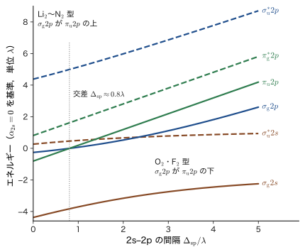
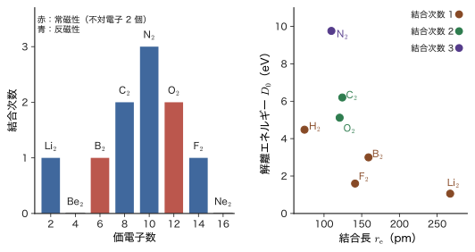
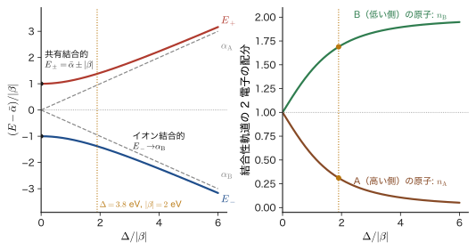
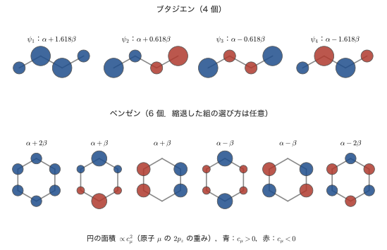
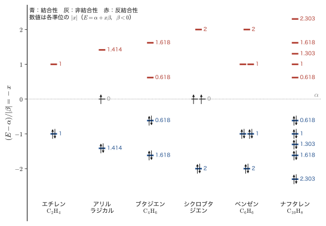
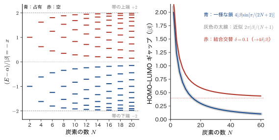
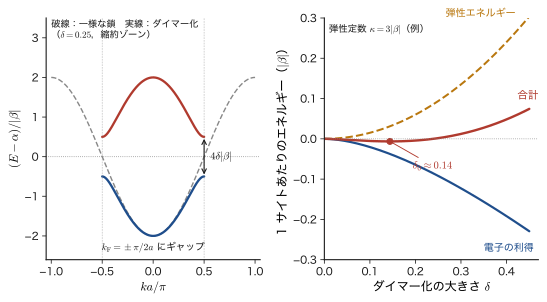

第40章化学結合（3）— 等核 2 原子分子の分子軌道と Hückel 法
空気の主成分である窒素分子 $\mathrm{N_2}$ と酸素分子 $\mathrm{O_2}$ は，周期表で隣り合う 2 つの原子からできた，よく似た 2 原子分子である．それなのに，窒素はほとんど何とも反応せず，液体窒素を磁石に近づけても何も起こらない．ところが液体酸素（沸点は約 90 K）は淡い青色の液体で，磁石の極に引き寄せられる．酸素分子の 2 つの原子を「二重結合」で結び，電子をすべて対にしたルイス構造 $\mathrm{O{=}O}$ を描くと，電子のスピンはすべて打ち消し合って磁石には引かれないはずである．この矛盾を解くのが，本章で学ぶ分子軌道法（MO 法）である．第39章の水素分子イオンで導入した LCAO（原子軌道の 1 次結合）の考え方を，第 2 周期の原子（Li〜Ne）からなる 2 原子分子と，平らな共役分子（エチレン，ブタジエン，ベンゼン）にまで広げる．
古典物理（AD 03）では，原子の間の結合は，バネや，Morse ポテンシャル（第20章）のような曲線として与えるしかなかった．曲線の深さや位置は実験から決める数であり，「なぜ $\mathrm{N_2}$ は $\mathrm{O_2}$ より強く結合するのか」「なぜ $\mathrm{O_2}$ は磁石に引かれるのか」という問いには答えられない．量子力学では，これらを，2 つの原子の軌道の重ね合わせ（波動関数の建設的な干渉と破壊的な干渉）と，電子の詰め方の規則（Pauli の排他原理と Hund の規則）だけから，結合次数，結合長，磁性として予言できる．この章の道具は，$2\times2$ から $N\times N$ までの行列の固有値問題だけである．
本章の後半の Hückel 法は，同じ考え方を平面分子の $\pi$ 電子に使うと，行列の要素が「隣り合う原子の間だけ $\beta$」という単純な形になり，ベンゼンの特別な安定性（芳香族性）や，共役の長さと色の関係が，暗算に近い計算で得られることを示す．さらに，共役鎖を長くしていくと，分子の準位が連続的なバンドになり，同じ行列が結晶の電子状態を与える．この「分子から結晶へ」の道は，次の第41章以降（結晶のバンド）と，姉妹編の固体物理学（AD 06）につながる．
- LCAO の組合せ規則（数の保存，対称性，エネルギーの近さと重なり）と，σ，π，g，u の意味．等核 2 原子分子の MO 図（$\sigma_{\mathrm g}2s$，$\sigma_{\mathrm u}^{*}2s$，$\sigma_{\mathrm g}2p$，$\sigma_{\mathrm u}^{*}2p$，$\pi_{\mathrm u}2p$，$\pi_{\mathrm g}^{*}2p$）と，$2s$–$2p$ 混合による 2 つの型
- $\mathrm{H_2}$ から $\mathrm{Ne_2}$ までの結合次数の求め方と，結合長・結合エネルギー・磁性との関係．$\mathrm{O_2}$ の常磁性（Hund の規則，$\mu_{\mathrm{eff}}=2.83\,\mu_{\mathrm B}$）と，$\mathrm{N_2}$ の光電子スペクトル
- 異核 2 原子分子の $2\times2$ 問題 $E_\pm=\bar\alpha\pm\sqrt{(\Delta/2)^2+\beta^2}$ と，共有結合・イオン結合の連続的なつながり
- Hückel 法：$\sigma$–$\pi$ 分離，$\alpha$，$\beta$ の意味（電子間反発ではない．「Coulomb 積分」の 3 通りの意味の整理），エチレン，アリル，ブタジエン，ベンゼン，シクロブタジエンの計算，非局在化エネルギー，$4n+2$ 則，Frost の円
- HOMO–LUMO 間隔と色，共役の長さ，有機半導体，フラーレン
- 共役鎖の準位 $E_j=\alpha+2\beta\cos\dfrac{j\pi}{N+1}$（環では $\cos\dfrac{2\pi j}{N}$）とバンドへの極限，ギャップが $4\lvert\beta\rvert\sin\dfrac{\pi}{2(N+1)}$ で 0 に近づくこと，Peierls 不安定性（結合交替）とポリアセチレン
もとにしたノート：本章はノートにない内容を補った章である．関連するノート：望月泰英『物理学ノート 量子力学3』 pp. 81–83．
40.1 等核 2 原子分子の MO 図 — 原子軌道の組合せ規則
40.1.1 何を作るのか
第39章では，2 個の水素原子の原子軌道（atomic orbital，AO）$\phi_{\mathrm A}$，$\phi_{\mathrm B}$ の 1 次結合 $\psi=c_{\mathrm A}\phi_{\mathrm A}+c_{\mathrm B}\phi_{\mathrm B}$ から $\mathrm{H_2^+}$ の分子軌道（molecular orbital，MO）を作った（LCAO 近似，linear combination of atomic orbitals）．エネルギーの低い結合性軌道と高い反結合性軌道が 1 組できた．この節では，同じ考え方で第 2 周期の元素 Li から Ne までの等核 2 原子分子 $\mathrm{Li_2},\mathrm{Be_2},\dots,\mathrm{Ne_2}$ の MO 図を作る．
第 2 周期の原子には，価電子の入る軌道が 4 個ある：$2s$，$2p_x$，$2p_y$，$2p_z$．2 原子で合わせて 8 個の AO があり，そこから 8 個の MO ができる．内側の $1s$ 軌道は，$2s$，$2p$ よりエネルギーが 1 桁以上深い（たとえば窒素原子の $1s$ 電子をはぎとるには約 400 eV が必要で，価電子は十数 eV で外れる）．エネルギーが遠く離れた軌道どうしはほとんど混ざらない（次に述べる規則）ので，$1s$ は各原子に閉じ込められたまま残り，化学結合には関与しない．以下では価電子の MO だけを考える．
記号：$\alpha$，$\beta$，$\phi$，$\psi$
本書では，AO と基底関数を $\phi_\mu$，MO を $\psi_i$，スピン軌道を $\chi_i$ と書く．この章では，2 つの AO の間の 1 電子行列要素を \begin{equation} \alpha_{\mathrm A}\equiv\mel{\phi_{\mathrm A}}{\hat{h}}{\phi_{\mathrm A}},\qquad \beta\equiv\mel{\phi_{\mathrm A}}{\hat{h}}{\phi_{\mathrm B}},\qquad S\equiv\braket{\phi_{\mathrm A}}{\phi_{\mathrm B}} \label{eq:40-def-alpha-beta} \end{equation} と書く．$\hat{h}$ は 1 個の電子に対する有効ハミルトニアン（運動エネルギーと，核と他の電子の平均的な場によるポテンシャルの和．第36章の Fock 演算子 $\hat{F}$ を，1 電子のハミルトニアンとみなしたものである．その行列表示は第37章の Roothaan–Hall 方程式に現れた．本章の半経験的な議論では，$\alpha$，$\beta$ の値は計算せず，実験に合わせて決める）で，$\alpha$ は AO のエネルギー（対角要素），$\beta$ は共鳴積分（非対角要素）である．この $\alpha$，$\beta$ は Hückel（ヒュッケル）法の慣習の記号で，電子スピンの向きを表すスピン関数 $\alpha=\ket{\uparrow}$，$\beta=\ket{\downarrow}$（第23章）とは無関係である．また，2 個の電子の間の反発を表す Coulomb 積分 $U_{ab}$ と交換積分 $J_{ab}$（第35章 35.3節）とも別のものである（この違いは 40.4 節の表40.5 で整理する）．エネルギーの符号は，$\alpha\lt0$，結合をつくる向きの $\beta\lt0$ である．
40.1.2 組合せの規則
どの AO どうしを混ぜるのか．次の規則で決まる．この規則は，等核でも異核でも，2 原子分子でも多原子分子でも，あとで扱う Hückel 法でも共通に使う．
法則40.1 LCAO の組合せ規則
(i) 数の保存：$N$ 個の AO から $N$ 個の MO ができる．
(ii) 対称性の規則：同じ対称性をもつ AO だけが混ざる．対称性が違う AO の間では，重なり積分も $\hat{h}$ の行列要素も 0 である．2 原子分子では，核間軸まわりの回転に対する対称性（$m=0$：σ，$\lvert m\rvert=1$：π）と，等核分子ではさらに反転に対する偶奇（g，u）が同じであることが条件になる．
(iii) エネルギーと重なりの規則：対称性が同じ 2 つの AO が混ざるとき，エネルギーの間隔が小さいほど混合は強く，重なり（非対角要素 $\lvert\beta\rvert$）が大きいほど 2 つの MO の間隔は大きく開く．エネルギーが遠く離れた AO は，ほとんど混ざらない．
対称性の規則を群論の言葉で言い換えたものは，AD 05 第12章 12.8で扱っている．この規則は，第VIII部で金属イオンの $d$ 軌道と配位子の σ，π 軌道から MO 図を作るとき（第45章の群論による方法）にも，そのまま使う．
(i) は，$N$ 個の基底関数から出発して $\hat{h}$ の固有値問題を解けば，行列の次元 $N$ だけ固有値と固有ベクトルが得られる（AD 02 第12章 12.3）ことの言い換えである．(iii) は，$2\times2$ の問題を解けばすぐに確かめられる．エネルギー $\alpha_{\mathrm A}$，$\alpha_{\mathrm B}$ の 2 つの AO（重なり積分は無視して $S=0$ とする）を非対角要素 $\beta$ で結んだ永年方程式は \begin{equation} \begin{vmatrix}\alpha_{\mathrm A}-E&\beta\\ \beta&\alpha_{\mathrm B}-E\end{vmatrix}=0 \quad\Longrightarrow\quad E_\pm=\frac{\alpha_{\mathrm A}+\alpha_{\mathrm B}}{2}\pm\sqrt{\left(\frac{\alpha_{\mathrm A}-\alpha_{\mathrm B}}{2}\right)^2+\beta^2} \label{eq:40-2x2} \end{equation} である（40.3 節でくわしく調べる）．2 つの AO のエネルギーが等しい（$\alpha_{\mathrm A}=\alpha_{\mathrm B}=\alpha$）なら $E_\pm=\alpha\pm\lvert\beta\rvert$ と，間隔がちょうど $2\lvert\beta\rvert$ に開き，混合は最大（1:1）になる．エネルギー差 $\lvert\alpha_{\mathrm A}-\alpha_{\mathrm B}\rvert$ が $\lvert\beta\rvert$ より十分大きいと，高い側の準位は $\beta^2/\lvert\alpha_{\mathrm A}-\alpha_{\mathrm B}\rvert$ だけ上へ，低い側の準位は同じだけ下へずれるにとどまり（$E_+\approx\alpha_{\mathrm{high}}+\beta^2/\lvert\alpha_{\mathrm A}-\alpha_{\mathrm B}\rvert$，$E_-\approx\alpha_{\mathrm{low}}-\beta^2/\lvert\alpha_{\mathrm A}-\alpha_{\mathrm B}\rvert$．$\alpha_{\mathrm{high}}$，$\alpha_{\mathrm{low}}$ は高い側，低い側の AO の準位），MO は元の AO とほとんど変わらない．混合は弱い（第27章 27.5節の 2 次摂動の「準位の反発」と同じ形，28.3節の 2 準位系の厳密解でもある）．内殻の $1s$ 軌道が結合に関与しないのは，$\lvert\alpha_{1s}-\alpha_{2s}\rvert$ が桁違いに大きいからである．
導出：対称性の規則の理由（核間軸まわりの回転）
核間軸を $z$ 軸にとり，$z$ 軸まわりの方位角を $\varphi$ とする（円筒座標 $(\rho,\varphi,z)$）．2 原子分子のポテンシャルは $z$ 軸まわりの回転で変わらないから，角運動量の $z$ 成分の演算子 $\hat{L}_z=-i\hbar\,\partial/\partial\varphi$ は $\hat{h}$ と交換する（$\comm{\hat{h}}{\hat{L}_z}=0$）．したがって $\hat{h}$ と $\hat{L}_z$ は同時に対角化でき，MO は $\varphi$ 依存性 $e^{im\varphi}$（$m=0,\pm1,\pm2,\dots$）をもつ関数にとれる．$\lvert m\rvert=0,1,2$ に対応する MO を，それぞれ σ 軌道，π 軌道，δ 軌道とよぶ（原子の s，p，d に対応するギリシャ文字）．AO では，$2s$ と $2p_z$ が $m=0$，$2p_x\pm i\,2p_y$（球面調和関数 $Y_1^{\pm1}\propto\sin\theta\,e^{\pm i\varphi}$，第22章）が $m=\pm1$ である．実数の $2p_x$，$2p_y$ は，$m=+1$ と $m=-1$ の 1 次結合であり，両者はエネルギーが等しい（$\hat{h}$ は $\varphi\to-\varphi$ の鏡映で不変）ので，$2p_x$，$2p_y$ は 2 重縮退した π 軌道をつくる．
$m$ の異なる 2 つの関数 $\chi_1\propto e^{im\varphi}$，$\chi_2\propto e^{im'\varphi}$ の間の積分は，体積要素 $\rho\,\dd\rho\,\dd\varphi\,\dd z$ の $\varphi$ 積分だけを取り出すと $$\int_0^{2\pi}e^{-im\varphi}\,e^{im'\varphi}\dd\varphi=2\pi\,\delta_{mm'}$$ となるから，$m\ne m'$ なら 0 になる．$\hat{h}$ は $\varphi$ に作用しない（$\hat{h}\chi_2\propto e^{im'\varphi}$ のまま）ので，行列要素 $\mel{\chi_1}{\hat{h}}{\chi_2}$ も同じ理由で 0 である．すなわち，σ 型の AO（$2s$，$2p_z$）と π 型の AO（$2p_x$，$2p_y$）は，同じ原子どうしでも，別の原子の間でも，決して混ざらない．
（導出終わり）
定義40.1 g と u（反転に対する偶奇）
等核 2 原子分子には，2 つの核の中点を中心とする反転（inversion）$\hat{\imath}:\bm{r}\to-\bm{r}$ に対する対称性がある．$\hat{h}$ と $\hat{\imath}$ は交換するので，MO は $\psi(-\bm{r})=\pm\psi(\bm{r})$ のどちらかにとれる．$+$ の場合を g（gerade，ドイツ語で「偶」），$-$ の場合を u（ungerade，「奇」）といい，σ，π の右下に添える（$\sigma_{\mathrm g}$，$\sigma_{\mathrm u}$，$\pi_{\mathrm g}$，$\pi_{\mathrm u}$）．反結合性の MO には慣習として右肩に $*$ を付ける（$\sigma_{\mathrm u}^{*}$，$\pi_{\mathrm g}^{*}$）．異核 2 原子分子には反転対称性がないので，g，u の区別はない．
40.1.3 価電子の 8 個の MO
核 A を $z=-R/2$，核 B を $z=+R/2$ に置く．各原子の $2p_z$ 軌道の符号は，どちらも $z$ 軸の正の向きを正とする（$\phi_{2p_z}\propto z\,f(r)$）．反転は 2 つの核を入れ替えるので，AO の反転に対する振る舞いは次のようになる（$(\hat{\imath}\phi)(\bm{r})=\phi(-\bm{r})$）．
導出：AO の反転に対する符号
核 A を中心とする AO を $\phi^{\mathrm A}(\bm{r})=F(\bm{r}-\bm{R}_{\mathrm A})$，核 B を中心とするものを $\phi^{\mathrm B}(\bm{r})=F(\bm{r}-\bm{R}_{\mathrm B})$ とする（$\bm{R}_{\mathrm A}=-\bm{R}_{\mathrm B}$）．
$2s$：$F$ は $\lvert\bm{r}\rvert$ だけの関数．$(\hat{\imath}\phi_{2s}^{\mathrm A})(\bm{r})=F(\lvert-\bm{r}-\bm{R}_{\mathrm A}\rvert)=F(\lvert\bm{r}+\bm{R}_{\mathrm A}\rvert)=F(\lvert\bm{r}-\bm{R}_{\mathrm B}\rvert)=\phi_{2s}^{\mathrm B}(\bm{r})$．よって $\hat{\imath}\phi_{2s}^{\mathrm A}=\phi_{2s}^{\mathrm B}$．
$2p_z$：$F(\bm{r})=z\,f(\lvert\bm{r}\rvert)$ は奇関数．$(\hat{\imath}\phi_{2p_z}^{\mathrm A})(\bm{r})=(-z-z_{\mathrm A})f(\lvert\bm{r}+\bm{R}_{\mathrm A}\rvert)=-(z-z_{\mathrm B})f(\lvert\bm{r}-\bm{R}_{\mathrm B}\rvert)=-\phi_{2p_z}^{\mathrm B}(\bm{r})$（$z_{\mathrm A}=-z_{\mathrm B}$ を使った）．よって $\hat{\imath}\phi_{2p_z}^{\mathrm A}=-\phi_{2p_z}^{\mathrm B}$．$2p_x$ も同様に $\hat{\imath}\phi_{2p_x}^{\mathrm A}=-\phi_{2p_x}^{\mathrm B}$．
したがって，2 つの AO の和と差は，次のように g，u のどちらかになる：
$$\hat{\imath}\,(\phi_{2s}^{\mathrm A}\pm\phi_{2s}^{\mathrm B})=\pm(\phi_{2s}^{\mathrm A}\pm\phi_{2s}^{\mathrm B}),\qquad
\hat{\imath}\,(\phi_{2p_z}^{\mathrm A}\mp\phi_{2p_z}^{\mathrm B})=\pm(\phi_{2p_z}^{\mathrm A}\mp\phi_{2p_z}^{\mathrm B}),\qquad
\hat{\imath}\,(\phi_{2p_x}^{\mathrm A}\pm\phi_{2p_x}^{\mathrm B})=\mp(\phi_{2p_x}^{\mathrm A}\pm\phi_{2p_x}^{\mathrm B}).$$
（導出終わり）
結果を，結合性か反結合性かで整理しよう．$2p_z$ の重なり積分は，同じ向きの $2p_z$ 軌道どうしでは，A の正の葉が B の負の葉に向き合うので負になる．そこで，σ 型の $p$ 軌道を扱うときは，2 つの葉が互いに向き合う（重なり積分が正になる）ように符号を選び直した \begin{equation} \phi_{p\sigma}^{\mathrm A}\equiv\phi_{2p_z}^{\mathrm A},\qquad\phi_{p\sigma}^{\mathrm B}\equiv-\phi_{2p_z}^{\mathrm B} \label{eq:40-psigma} \end{equation} を使う．このとき $\hat{\imath}\phi_{p\sigma}^{\mathrm A}=+\phi_{p\sigma}^{\mathrm B}$ となり，$2s$ 軌道と全く同じに扱える．$2p_x$，$2p_y$（π 型）では，2 つの葉が並ぶので，同じ向きの符号のままで重なり積分が正になる．
| MO | LCAO（$z$ 軸の正の向きを共通に正とする $2p$） | 反転 | 結合性・反結合性 |
|---|---|---|---|
| $\sigma_{\mathrm g}2s$ | $c_{+}\,(\phi_{2s}^{\mathrm A}+\phi_{2s}^{\mathrm B})$ | g | 結合性 |
| $\sigma_{\mathrm u}^{*}2s$ | $c_{-}\,(\phi_{2s}^{\mathrm A}-\phi_{2s}^{\mathrm B})$ | u | 反結合性 |
| $\sigma_{\mathrm g}2p$ | $c_{+}\,(\phi_{2p_z}^{\mathrm A}-\phi_{2p_z}^{\mathrm B})=c_{+}\,(\phi_{p\sigma}^{\mathrm A}+\phi_{p\sigma}^{\mathrm B})$ | g | 結合性 |
| $\sigma_{\mathrm u}^{*}2p$ | $c_{-}\,(\phi_{2p_z}^{\mathrm A}+\phi_{2p_z}^{\mathrm B})=c_{-}\,(\phi_{p\sigma}^{\mathrm A}-\phi_{p\sigma}^{\mathrm B})$ | u | 反結合性 |
| $\pi_{\mathrm u}2p$（$x$ と $y$ の 2 重縮退） | $c_{+}\,(\phi_{2p_x}^{\mathrm A}+\phi_{2p_x}^{\mathrm B})$，$c_{+}\,(\phi_{2p_y}^{\mathrm A}+\phi_{2p_y}^{\mathrm B})$ | u | 結合性 |
| $\pi_{\mathrm g}^{*}2p$（$x$ と $y$ の 2 重縮退） | $c_{-}\,(\phi_{2p_x}^{\mathrm A}-\phi_{2p_x}^{\mathrm B})$，$c_{-}\,(\phi_{2p_y}^{\mathrm A}-\phi_{2p_y}^{\mathrm B})$ | g | 反結合性 |
表40.1 の規格化定数は $c_\pm=1/\sqrt{2(1\pm S)}$（結合性に $c_+$，反結合性に $c_-$．$S$ は，向きを直した AO の重なり積分．第39章）である．結合性の MO と反結合性の MO を見分ける目安は，核と核の間に節面（波動関数が 0 になる面）が新しく現れるかどうかである（図40.1）．結合性の軌道は核の間に同符号の領域が広がって電子が核の間に溜まり，反結合性の軌道は核の間の面に節をもち，電子が核の間から追い出される．なお，σ の結合性は g，π の結合性は u と，逆になっている．g，u の添字は，「結合性か反結合性か」ではなく「反転で符号が変わるか」で決まるためである．
イメージ：σ 結合と π 結合の重なり
σ 型の重なりは，軌道の葉が核間軸の上で「先端どうし」（head-on）で向き合う重なりで，$\lvert\beta\rvert$ が大きい．π 型の重なりは，核間軸の両側で葉が「肩を並べる」（side-on）重なりで，$\lvert\beta\rvert$ が σ より小さい．Slater 型の $2p$ 軌道（軌道指数 $\zeta=1.95$，Slater の規則による窒素の値）を使って，$\mathrm{N_2}$ の結合長 $R=109.8\ \mathrm{pm}$ で重なり積分を数値積分すると，同じ向きの $2p_z$ 軌道では $S_{zz}=-0.32$（符号は上述のとおり負で，向き直した $\phi_{p\sigma}$ では $+0.32$），$2p_x$ 軌道では $S_{xx}=+0.28$ である．$S$ の大きさだけを見れば両者はそれほど違わないが，$\hat{h}$ の行列要素 $\beta$ は，軌道の形が違うために σ 型のほうがはるかに大きい（40.1.4 節の模型では $\lvert\beta_{pp}\rvert:\lvert\beta_{\pi}\rvert\approx4:1$ をとる）．結果として，2s と 2p から作る MO では，同じ 2p 由来でも $\sigma_{\mathrm g}2p$ は $\pi_{\mathrm u}2p$ より安定，$\sigma_{\mathrm u}^{*}2p$ は $\pi_{\mathrm g}^{*}2p$ より不安定になるのが基本である．
例題40.1 MO の対称性（σ か π か，g か u か）と結合性・反結合性の判定
核 A を $z=-R/2$，核 B を $z=+R/2$ に置いた等核 2 原子分子（$R$ は核間距離）で，次の 3 つの MO を考える（$c$ は規格化定数）．$2p_z$ は $z$ 軸の正の向き，$2p_x$ は $x$ 軸の正の向きを，どちらの原子でも正にとる．(a) $\psi_{\mathrm a}=c\,(\phi_{2p_z}^{\mathrm A}+\phi_{2p_z}^{\mathrm B})$，(b) $\psi_{\mathrm b}=c\,(\phi_{2p_x}^{\mathrm A}-\phi_{2p_x}^{\mathrm B})$，(c) $\psi_{\mathrm c}=c\,(\phi_{2s}^{\mathrm A}-\phi_{2s}^{\mathrm B})$．それぞれについて，核間軸まわりの対称性（σ か π か），反転に対する偶奇（g か u か），核の間に節面があるか（結合性か反結合性か）を判定し，表40.1 の名前をつけよ．
解答 AO の反転に対する符号は，$\hat{\imath}\phi_{2s}^{\mathrm A}=\phi_{2s}^{\mathrm B}$，$\hat{\imath}\phi_{2p_z}^{\mathrm A}=-\phi_{2p_z}^{\mathrm B}$，$\hat{\imath}\phi_{2p_x}^{\mathrm A}=-\phi_{2p_x}^{\mathrm B}$（A と B を入れ替えても同じ）である．核の間の中点は $z=0$ で，その面での AO の値は，$2s$ では $\phi_{2s}^{\mathrm A}=\phi_{2s}^{\mathrm B}$，$2p_x$ では $\phi_{2p_x}^{\mathrm A}=\phi_{2p_x}^{\mathrm B}$（どちらも $x\,f(r)$ で同符号），$2p_z$ では $\phi_{2p_z}^{\mathrm A}\propto(z+R/2)f=+\tfrac{R}{2}f$，$\phi_{2p_z}^{\mathrm B}\propto(z-R/2)f=-\tfrac{R}{2}f$（互いに逆符号）である．
(a) $2p_z$ は $z$ 軸まわりの回転で不変（$m=0$）だから σ．反転で $\hat{\imath}\psi_{\mathrm a}=c\,(-\phi_{2p_z}^{\mathrm B}-\phi_{2p_z}^{\mathrm A})=-\psi_{\mathrm a}$ となり，符号が変わるので u．中点の面では $\phi_{2p_z}^{\mathrm A}+\phi_{2p_z}^{\mathrm B}=0$ で，核の間に節面ができる．したがって反結合性で，$\sigma_{\mathrm u}^{*}2p$ である．
(b) $2p_x$ は $m=\pm1$ の 1 次結合だから π．$\hat{\imath}\psi_{\mathrm b}=c\,(-\phi_{2p_x}^{\mathrm B}+\phi_{2p_x}^{\mathrm A})=+\psi_{\mathrm b}$ で g．中点の面では $\phi_{2p_x}^{\mathrm A}-\phi_{2p_x}^{\mathrm B}=0$ で，軸を含む節面（$x=0$）に加えて核の間にも節面がある．したがって反結合性で，$\pi_{\mathrm g}^{*}2p$ である．
(c) $2s$ は $m=0$ だから σ．$\hat{\imath}\psi_{\mathrm c}=c\,(\phi_{2s}^{\mathrm B}-\phi_{2s}^{\mathrm A})=-\psi_{\mathrm c}$ で u．中点の面で $\phi_{2s}^{\mathrm A}-\phi_{2s}^{\mathrm B}=0$ で，核の間に節面があるから反結合性で，$\sigma_{\mathrm u}^{*}2s$ である．
まとめると，(a)，(b)，(c) はそれぞれ $\sigma_{\mathrm u}^{*}2p$，$\pi_{\mathrm g}^{*}2p$，$\sigma_{\mathrm u}^{*}2s$ で，表40.1 と一致する．反結合性の軌道は，どれも核の間の面に節をもつ．一方，g，u は反転で符号が変わるかどうかで決まる別の性質で，$\sigma_{\mathrm u}^{*}$ と $\pi_{\mathrm g}^{*}$ のように，反結合性の軌道の g，u は σ と π で逆になる．
関連シミュレーター：重なり積分（2 つの AO を近づけて，σ，π，δ の重なりの大きさと符号がどう変わるかを見る）
40.1.4 2s–2p 混合と 2 つの型の MO 図
8 個の MO をエネルギーの順に並べたものが MO 図である．並べ方には，第 2 周期の前半と後半とで違いがある．素朴には，(a) $2s$ 由来の 2 個（$\sigma_{\mathrm g}2s$，$\sigma_{\mathrm u}^{*}2s$）が低く，$2p$ 由来の 6 個が高いこと，(b) $2p$ 由来のなかでは，重なりの大きい σ が大きく開くので $\sigma_{\mathrm g}2p$ が最も低く $\sigma_{\mathrm u}^{*}2p$ が最も高いこと，π はその間に入ること，から $$\sigma_{\mathrm g}2s\lt\sigma_{\mathrm u}^{*}2s\lt\sigma_{\mathrm g}2p\lt\pi_{\mathrm u}2p\lt\pi_{\mathrm g}^{*}2p\lt\sigma_{\mathrm u}^{*}2p$$ の順が予想される．これは実際に $\mathrm{O_2}$，$\mathrm{F_2}$（と，その仲間の $\mathrm{Ne_2}$）の順序である（図40.2 (b)）．ところが $\mathrm{Li_2}$ から $\mathrm{N_2}$ では，$\sigma_{\mathrm g}2p$ と $\pi_{\mathrm u}2p$ の順序が入れ替わる（図40.2 (a)）．原因は，法則40.1 (ii) が許す$2s$ と $2p$ の混合である．
$\sigma_{\mathrm g}2s$ と $\sigma_{\mathrm g}2p$ は，どちらも σ で g だから，法則40.1 の (ii) を満たす．同じ対称性の 2 つの準位が非対角要素で結ばれれば，上の準位は上へ，下の準位は下へ押される（準位の反発，式 \eqref{eq:40-2x2}）．$\sigma_{\mathrm u}^{*}2s$ と $\sigma_{\mathrm u}^{*}2p$ も同様である．ところが π の MO には，同じ対称性（π で u，または π で g）の相手がいない（$2s$ は σ 型）から，この押し合いは起きない．$2s$–$2p$ 混合の効果は，$\sigma_{\mathrm g}2s$ が下がり，$\sigma_{\mathrm g}2p$ が上がり，$\sigma_{\mathrm u}^{*}2s$ が上がり，$\sigma_{\mathrm u}^{*}2p$ が下がることである（図40.2 (a) の矢印）．混合が強ければ，$\sigma_{\mathrm g}2p$ が持ち上げられて $\pi_{\mathrm u}2p$ を追い越す．
混合の強さは，$2s$ と $2p$ の AO のエネルギー差 $\Delta_{sp}=\alpha_{2p}-\alpha_{2s}$ で決まる．原子番号が増えると，核電荷が増えて $2s$ のほうが $2p$ よりも強く引きつけられ（$2s$ は核の近くまで入り込む，貫入，第18章），$\Delta_{sp}$ は大きくなる．リチウム原子の $2s$–$2p$ 間隔は約 2 eV（赤い共鳴線の波長 671 nm に対応する光子のエネルギー：$hc/(671\ \mathrm{nm})=1.85\ \mathrm{eV}$）にすぎないが，フッ素やネオンでは 20 eV を超える．$\Delta_{sp}$ が小さい前半（$\mathrm{Li_2}$〜$\mathrm{N_2}$）では混合が強く，大きい後半（$\mathrm{O_2}$，$\mathrm{F_2}$）では混合が弱い．
導出：$\sigma_{\mathrm g}2p$ と $\pi_{\mathrm u}2p$ の入れ替わる条件（4 準位の模型）
各原子の $2s$ の準位を $\alpha_s=0$，$2p$ の準位を $\alpha_p=\Delta_{sp}\;(\gt0)$ とし，重なり積分を無視して，次の行列要素だけを考える（向きを直した $\phi_{p\sigma}$（式 \eqref{eq:40-psigma}）を使うので，すべて負）：$\beta_{ss}=\mel{s_{\mathrm A}}{\hat{h}}{s_{\mathrm B}}$，$\beta_{sp}=\mel{s_{\mathrm A}}{\hat{h}}{p\sigma_{\mathrm B}}=\mel{s_{\mathrm B}}{\hat{h}}{p\sigma_{\mathrm A}}$，$\beta_{pp}=\mel{p\sigma_{\mathrm A}}{\hat{h}}{p\sigma_{\mathrm B}}$，$\beta_{\pi}=\mel{p_{x\mathrm A}}{\hat{h}}{p_{x\mathrm B}}$．同じ原子の $s$ と $p\sigma$ の間の行列要素 $\mel{s_{\mathrm A}}{\hat{h}}{p\sigma_{\mathrm A}}$ は，相手の原子の核のポテンシャルによる小さな項なので，二中心近似（結合をつくる 2 つの原子の間の要素だけを残す近似）で 0 とおく．（$s$ と $p\sigma$ は，どちらも $m=0$ で同じ原子の上にあるから，法則40.1 (ii) が混合を禁じるわけではない．また，反転は原子 A の軌道と原子 B の軌道を入れ替える操作なので，この行列要素を 0 にする理由にもならない．同じ原子の上で $s$ と $p\sigma$ が混ざる効果は，各原子の $sp$ 混成にあたり，ここでは無視する．）
g の対称性の 2 つの関数 $s_{\mathrm g}=(s_{\mathrm A}+s_{\mathrm B})/\sqrt2$，$p_{\mathrm g}=(p\sigma_{\mathrm A}+p\sigma_{\mathrm B})/\sqrt2$ の間の $\hat{h}$ の行列は，
$$\mel{s_{\mathrm g}}{\hat{h}}{s_{\mathrm g}}=\alpha_s+\beta_{ss},\quad\mel{p_{\mathrm g}}{\hat{h}}{p_{\mathrm g}}=\alpha_p+\beta_{pp},\quad\mel{s_{\mathrm g}}{\hat{h}}{p_{\mathrm g}}=\tfrac12\bigl(\mel{s_{\mathrm A}}{\hat{h}}{p\sigma_{\mathrm B}}+\mel{s_{\mathrm B}}{\hat{h}}{p\sigma_{\mathrm A}}\bigr)=\beta_{sp}$$
である．u の対称性の関数 $s_{\mathrm u}=(s_{\mathrm A}-s_{\mathrm B})/\sqrt2$，$p_{\mathrm u}=(p\sigma_{\mathrm A}-p\sigma_{\mathrm B})/\sqrt2$ では，対角要素が $\alpha_s-\beta_{ss}$，$\alpha_p-\beta_{pp}$，非対角要素が $-\beta_{sp}$ になる．π の $\pi_{\mathrm u}$，$\pi_{\mathrm g}^{*}$ のエネルギーは，混合がないので $\alpha_p+\beta_{\pi}$，$\alpha_p-\beta_{\pi}$ である．
$\sigma_{\mathrm g}2p$ は，g の $2\times2$ 行列の高い方の固有値である．これが $\pi_{\mathrm u}2p$ のエネルギー $E_\pi=\alpha_p+\beta_\pi$ と一致する条件は，永年行列式に $E=E_\pi$ を入れて
$$(\alpha_s+\beta_{ss}-E_\pi)(\alpha_p+\beta_{pp}-E_\pi)-\beta_{sp}^2=0
\;\Longleftrightarrow\;
-(\Delta_{sp}-\beta_{ss}+\beta_\pi)(\beta_{pp}-\beta_\pi)=\beta_{sp}^2$$
すなわち
\begin{equation}
\Delta_c=\frac{\beta_{sp}^2}{\beta_\pi-\beta_{pp}}+\beta_{ss}-\beta_\pi \label{eq:40-crossing}
\end{equation}
である．$\Delta_{sp}\gt\Delta_c$ なら $\sigma_{\mathrm g}2p$ は $\pi_{\mathrm u}2p$ の下（O$_2$・F$_2$ 型），$\Delta_{sp}\lt\Delta_c$ なら上（Li$_2$〜N$_2$ 型）になる．
定量の見当をつけるために，固体の強束縛近似で使われる比 $\lvert\beta_{ss}\rvert:\lvert\beta_{sp}\rvert:\lvert\beta_{pp}\rvert:\lvert\beta_\pi\rvert=1.40:1.84:3.24:0.81$（W. A. Harrison が固体の強束縛近似（第41章）のために提案した経験則．単位は共通の $\lambda=\hbar^2/(m_{\mathrm e}d^2)$，$d$ は結合長）を入れると，式 \eqref{eq:40-crossing} は $\Delta_c=1.84^2/(3.24-0.81)\,\lambda-1.40\lambda+0.81\lambda=0.80\,\lambda$ になる．$\hbar^2/m_{\mathrm e}=7.62\ \mathrm{eV}\,\text{Å}^2$ だから，$\mathrm{N_2}$（$d=109.8\ \mathrm{pm}$）では $\lambda\approx6.3\ \mathrm{eV}$，$\Delta_c\approx5\ \mathrm{eV}$ である．図40.3 は，この模型で 6 個の準位を $\Delta_{sp}$ の関数として描いたものである．
ただし，この模型は重なり積分と電子間反発を無視し，$\beta$ の比も固体の経験則から借りたものなので，交差の位置を定量的に予言するものではない．たとえば，窒素原子の $2s$–$2p$ の間隔は Hartree–Fock 計算の軌道エネルギーで約 10 eV あり，$\Delta_c$ より大きいので，この模型のままでは $\mathrm{N_2}$ まで $\mathrm{O_2}$ 型に分類してしまう．また，$\sigma_{\mathrm u}^{*}2s$ の位置も図40.2 の並びとは一致しない（この模型では，$\Delta_{sp}\lt2.3\lambda$ のとき $\sigma_{\mathrm u}^{*}2s$ が $\sigma_{\mathrm g}2p$ より上にくる）．この模型が示すのは，「$\Delta_{sp}$ が大きいと $\sigma_{\mathrm g}2p$ が $\pi_{\mathrm u}2p$ の下にくる」という仕組みだけである．
（導出終わり）

例題40.2 4 準位模型の数値例 — $\sigma_{\mathrm g}2p$ と $\pi_{\mathrm u}2p$ の順序
4 準位模型で $\beta_{ss}=-1.40\lambda$，$\beta_{sp}=-1.84\lambda$，$\beta_{pp}=-3.24\lambda$，$\beta_\pi=-0.81\lambda$，$\alpha_s=0$ とする．(1) $\Delta_{sp}=0.4\lambda$，(2) $\Delta_{sp}=2\lambda$ のそれぞれについて，g の $2\times2$ 行列の 2 つの固有値と $\pi_{\mathrm u}2p$ のエネルギーを求め，$\sigma_{\mathrm g}2p$ が $\pi_{\mathrm u}2p$ の上と下のどちらにあるかを答えよ．(3) $\lambda=6.3\ \mathrm{eV}$ として，両者の間隔を eV で表せ．
解答 g の行列は $\begin{pmatrix}\beta_{ss}&\beta_{sp}\\ \beta_{sp}&\Delta_{sp}+\beta_{pp}\end{pmatrix}$ で，トレースを $T$，行列式を $D$ とすると固有値は $E=\bigl(T\pm\sqrt{T^2-4D}\bigr)/2$ である．高い方が $\sigma_{\mathrm g}2p$，低い方が $\sigma_{\mathrm g}2s$．$\pi_{\mathrm u}2p$ は混合がなく，$E_\pi=\Delta_{sp}+\beta_\pi$．エネルギーの単位は $\lambda$ である．
(1) $\Delta_{sp}=0.4$：行列は $\begin{pmatrix}-1.40&-1.84\\-1.84&-2.84\end{pmatrix}$．$T=-4.24$，$D=(-1.40)(-2.84)-(-1.84)^2=3.976-3.3856=0.5904$，$\sqrt{T^2-4D}=\sqrt{17.9776-2.3616}=3.952$．$E=(-4.24\pm3.952)/2=-0.144,\ -4.096$．$E_\pi=0.4-0.81=-0.41$．$\sigma_{\mathrm g}2p$（$-0.144$）は $\pi_{\mathrm u}2p$（$-0.41$）の上にある（$\mathrm{Li_2}$〜$\mathrm{N_2}$ 型）．
(2) $\Delta_{sp}=2$：行列は $\begin{pmatrix}-1.40&-1.84\\-1.84&-1.24\end{pmatrix}$．$T=-2.64$，$D=1.736-3.3856=-1.6496$，$\sqrt{T^2-4D}=\sqrt{6.9696+6.5984}=3.683$．$E=(-2.64\pm3.683)/2=+0.522,\ -3.162$．$E_\pi=2-0.81=+1.19$．$\sigma_{\mathrm g}2p$（$+0.522$）は $\pi_{\mathrm u}2p$（$+1.19$）の下にある（$\mathrm{O_2}$・$\mathrm{F_2}$ 型）．
(3) (1) では $-0.144-(-0.41)=+0.266\lambda\approx+1.7\ \mathrm{eV}$（$\sigma_{\mathrm g}2p$ が上），(2) では $0.522-1.19=-0.668\lambda\approx-4.2\ \mathrm{eV}$（$\sigma_{\mathrm g}2p$ が下）．順序が逆転する境目は，式 \eqref{eq:40-crossing} の $\Delta_c=0.80\lambda$ で，(1) は $\Delta_c$ より小さく，(2) は大きいので，上の結論と合っている．
注意：MO 図の準位の順序は近似の産物
図40.2 と図40.3 の準位の並びは，AO の線形結合という定性的な見取り図である．実際の準位の順序を決めるのは，電子の間の反発を含む多電子計算と実験（次節の光電子スペクトル）である．とくに $\sigma_{\mathrm g}2p$ と $\pi_{\mathrm u}2p$ は，第 2 周期の中ほどで，準位が近く順序が微妙に入れ替わる．次節で述べるように，Hartree–Fock 計算の軌道エネルギーをそのまま Koopmans の定理で読むと，$\mathrm{N_2}$ ではこの 2 つの順序を実験と逆に予言してしまう．この節の要点は，「順序の入れ替わりの仕組みが同じ対称性の $2s$ と $2p$ の準位反発である」ことである．
40.1.5 電子の詰め方と結合次数
MO の準位が決まったら，価電子を下の準位から詰める．次の 3 つの規則を使う．
- 構成原理（Aufbau）：エネルギーの低い MO から順に詰める．
- Pauli の排他原理：1 つの MO（空間軌道）には，スピンが逆向きの電子が最大 2 個まで入る（第33章 33.5節）．
- Hund の規則：縮退した軌道（ここでは $\pi_{\mathrm u}2p$ の 2 個，$\pi_{\mathrm g}^{*}2p$ の 2 個）に電子を入れるときは，まずスピンを平行にそろえて別々の軌道に 1 個ずつ入れる（第34章 34.6節）．同じ空間軌道に 2 個入れると，電子間の反発が大きくなる．
定義40.2 結合次数
結合性の MO に入った電子の数 $n_{\mathrm b}$ と反結合性の MO に入った電子の数 $n_{\mathrm a}$ から， \begin{equation} b=\frac{n_{\mathrm b}-n_{\mathrm a}}{2} \label{eq:40-bo} \end{equation} を結合次数（bond order）という．内殻の $\sigma_{\mathrm g}1s$，$\sigma_{\mathrm u}^{*}1s$ は，結合性と反結合性の両方が満たされていて $n_{\mathrm b}-n_{\mathrm a}$ に寄与しないので，価電子だけを数えればよい．
式 \eqref{eq:40-bo} の意味は次のとおりである．結合性軌道に入った 1 対（2 個）の電子は，2 つの原子を 1 本の共有結合でつなぐ（原子価結合法の共有電子対，第38章）．反結合性軌道の 1 対は，その効果を打ち消す．したがって $(n_{\mathrm b}-n_{\mathrm a})/2$ 対が正味の結合の数であり，1 は単結合，2 は二重結合，3 は三重結合に対応する．半整数（0.5，2.5 など）は，奇数個の電子をもつ分子やイオンで現れる．結合次数が大きいほど結合は短く強く，0 なら結合は生じない（2 個の原子は分離したほうが安定）．以上は，AO の重なりが小さくて $\lvert\beta\rvert$ と $S$ の効果が対称な場合の目安であり，結合エネルギーの大きさそのものは，次節の表のように結合次数だけでは決まらない．
例題40.3 $\mathrm{H_2^+}$，$\mathrm{H_2}$，$\mathrm{He_2^+}$，$\mathrm{He_2}$ の電子配置と結合次数
水素とヘリウムでは，$1s$ 軌道から $\sigma_{\mathrm g}1s$（結合性）と $\sigma_{\mathrm u}^{*}1s$（反結合性）ができる．これらに電子を詰めて，4 種の 2 原子分子（イオン）の電子配置と結合次数を求めよ．
解答 電子の数はそれぞれ 1，2，3，4 個．下の $\sigma_{\mathrm g}1s$ から詰める．
・$\mathrm{H_2^+}$（1 電子）：$(\sigma_{\mathrm g}1s)^1$．$n_{\mathrm b}=1$，$n_{\mathrm a}=0$ だから $b=(1-0)/2=0.5$．
・$\mathrm{H_2}$（2 電子）：$(\sigma_{\mathrm g}1s)^2$．$b=(2-0)/2=1$（単結合）．
・$\mathrm{He_2^+}$（3 電子）：$(\sigma_{\mathrm g}1s)^2(\sigma_{\mathrm u}^{*}1s)^1$．$b=(2-1)/2=0.5$．
・$\mathrm{He_2}$（4 電子）：$(\sigma_{\mathrm g}1s)^2(\sigma_{\mathrm u}^{*}1s)^2$．$b=(2-2)/2=0$．
したがって $\mathrm{H_2}$ が最も強く結合し，$\mathrm{H_2^+}$ と $\mathrm{He_2^+}$ は結合次数 0.5 の弱い結合をもつ（実際，$\mathrm{He_2^+}$ は解離エネルギーが約 2.4 eV で，気体放電のなかなどでつくられる）．$\mathrm{He_2}$ は結合次数 0 で，化学結合をつくらない：$\mathrm{He}$ が単原子分子であることの説明になる．（極低温の $\mathrm{He_2}$ は，van der Waals 力で極めて弱く束縛された状態が実験で観測されているが，結合エネルギーは約 $10^{-7}\ \mathrm{eV}$ で，化学結合ではない．）
40.2 $\mathrm{H_2}$ から $\mathrm{Ne_2}$ まで — 結合次数・結合長・磁性
40.2.1 第 2 周期の等核 2 原子分子の一覧
前節の MO 図に，価電子を 2 個ずつ増やしながら詰めていくと，$\mathrm{Li_2}$ から $\mathrm{Ne_2}$ までの結合次数と磁性が決まる．結果を，実測の結合長 $r_{\mathrm e}$ と結合の強さ（解離エネルギー $D_0$．基底振動状態から 2 個の中性原子に分けるのに必要なエネルギー）とともに表40.2 に示す．$\mathrm{H_2}$ と $\mathrm{He_2}$ は $1s$ から作る（価電子数の欄はその分子の電子の総数）．$\mathrm{Li_2}$ 以降の各行の電子配置は，前の行の配置に，「加わる軌道」の欄の電子を加えたものである（内殻は省く．$\mathrm{Li_2}$〜$\mathrm{N_2}$ は図40.2 (a)，$\mathrm{O_2}$，$\mathrm{F_2}$ は (b) の順に詰める．$\mathrm{O_2}$ は $\mathrm{N_2}$ の配置に，$\mathrm{Ne_2}$ は $\mathrm{F_2}$ の配置に加える）．
| 分子 | 価電子数 | 加わる軌道 | 結合次数 $b$ | 不対電子 | $r_{\mathrm e}$（pm） | $D_0$（eV） | 基底状態の項 |
|---|---|---|---|---|---|---|---|
| $\mathrm{H_2}$ | 2 | $(\sigma_{\mathrm g}1s)^2$ | 1 | 0 | 74.1 | 4.48 | ${}^1\Sigma_{\mathrm g}^{+}$ |
| $\mathrm{He_2}$ | 4 | $(\sigma_{\mathrm u}^{*}1s)^2$（$\mathrm{H_2}$ の配置に加える） | 0 | 0 | — | 約 $10^{-7}$（van der Waals 力） | ${}^1\Sigma_{\mathrm g}^{+}$ |
| $\mathrm{Li_2}$ | 2 | $(\sigma_{\mathrm g}2s)^2$ | 1 | 0 | 267 | 約 1.1 | ${}^1\Sigma_{\mathrm g}^{+}$ |
| $\mathrm{Be_2}$ | 4 | $(\sigma_{\mathrm u}^{*}2s)^2$ | 0 | 0 | 245 | 約 0.1 | ${}^1\Sigma_{\mathrm g}^{+}$ |
| $\mathrm{B_2}$ | 6 | $(\pi_{\mathrm u}2p)^2$ | 1 | 2 | 159 | 約 3 | ${}^3\Sigma_{\mathrm g}^{-}$ |
| $\mathrm{C_2}$ | 8 | $(\pi_{\mathrm u}2p)^2$ を加えて $(\pi_{\mathrm u}2p)^4$ | 2 | 0 | 124 | 約 6.2 | ${}^1\Sigma_{\mathrm g}^{+}$ |
| $\mathrm{N_2}$ | 10 | $(\sigma_{\mathrm g}2p)^2$ | 3 | 0 | 109.8 | 9.76 | ${}^1\Sigma_{\mathrm g}^{+}$ |
| $\mathrm{O_2}$ | 12 | $(\pi_{\mathrm g}^{*}2p)^2$（(b) の順序では，$\sigma_{\mathrm g}2p$ が $\pi_{\mathrm u}2p$ の下） | 2 | 2 | 120.8 | 5.12 | ${}^3\Sigma_{\mathrm g}^{-}$ |
| $\mathrm{F_2}$ | 14 | $(\pi_{\mathrm g}^{*}2p)^2$ を加えて $(\pi_{\mathrm g}^{*}2p)^4$ | 1 | 0 | 141.2 | 約 1.6 | ${}^1\Sigma_{\mathrm g}^{+}$ |
| $\mathrm{Ne_2}$ | 16 | $(\sigma_{\mathrm u}^{*}2p)^2$ | 0 | 0 | — | 約 0.003（van der Waals 力） | ${}^1\Sigma_{\mathrm g}^{+}$ |
表の最後の列の $^{2S+1}\Lambda_{\mathrm{g/u}}^{\pm}$ は分子の項記号である（原子の項記号 ${}^{2S+1}L_J$（第34章 34.2節）の 2 原子分子版）．$S$ は全スピン，$\Lambda=\lvert\sum m\rvert$ は核間軸まわりの全軌道角運動量の大きさで，$\Lambda=0,1,2$ をそれぞれ $\Sigma,\Pi,\Delta$ と書く．g/u は反転に対する偶奇（定義40.1），右肩の $\pm$ は，軸を含む面での鏡映に対する偶奇（$\Sigma$ のときだけ書く）である．${}^1\Sigma_{\mathrm g}^{+}$ は，閉殻の分子に共通の項である（スピン一重項，全軌道角運動量 0）．
40.2.2 表を読む
表40.2 の内容を，MO 図から読み取ってみよう．
- $\mathrm{Li_2}$，$\mathrm{Be_2}$：$\mathrm{Li_2}$ は $\sigma_{\mathrm g}2s$ に 2 電子で単結合（$b=1$）．ただし，結合長 267 pm，解離エネルギー約 1.1 eV は，$\mathrm{H_2}$ の 74 pm，4.48 eV と比べて長く弱い．$2s$ 軌道が広がっていて核が離れており，重なり $\beta$ の絶対値も小さいためである．$\mathrm{Be_2}$ は $\sigma_{\mathrm g}2s$，$\sigma_{\mathrm u}^{*}2s$ がともに満ちて $b=0$．MO 図の予言どおり化学結合はほとんどなく，実験でもきわめて弱い結合（約 0.1 eV，$r_{\mathrm e}$ は約 245 pm）しか観測されない．この弱い結合は，2s–2p 混合と電子相関（電子どうしが避け合う効果）によるもので，1 電子の MO 図の範囲を超える．
- $\mathrm{B_2}$：混合の証拠 $\mathrm{B_2}$ の価電子は 6 個．$\sigma_{\mathrm g}2s$，$\sigma_{\mathrm u}^{*}2s$ に 4 個入れると，残る 2 個は，前節の $\mathrm{Li_2}$〜$\mathrm{N_2}$ 型の順序では，2 重縮退した $\pi_{\mathrm u}2p$ に入る．Hund の規則により，2 個の電子は別々の $\pi_{\mathrm u}$ 軌道に入ってスピンを平行にそろえ，$S=1$ の三重項（不対電子 2 個）になる．実験でも，$\mathrm{B_2}$ の基底状態は ${}^3\Sigma_{\mathrm g}^{-}$ である（$\mathrm{B_2}$ は結合次数 1 なのに，不対電子をもつ常磁性（paramagnetic）になる）．もし $\sigma_{\mathrm g}2p$ が $\pi_{\mathrm u}2p$ より下にあれば，2 電子は $\sigma_{\mathrm g}2p$ に対で入って反磁性になるはずである．したがって，$\mathrm{B_2}$ が常磁性であることは，2s–2p 混合で $\pi_{\mathrm u}2p$ が $\sigma_{\mathrm g}2p$ より下がっていることの証拠になっている．
- $\mathrm{C_2}$：8 電子で $(\pi_{\mathrm u}2p)^4$ が満ちる．結合次数は $(6-2)/2=2$，反磁性（diamagnetic．不対電子がなく，磁場から弱く反発される）である．この分子は，MO 図のうえでは 2 本の π 結合だけで結ばれている（σ 結合に電子が入っていない）という珍しい分子で，$\mathrm{C_2}$ の結合の描像には今も議論がある．気相の $\mathrm{C_2}$ は，炎の青緑色の発光（Swan 帯．$\mathrm{C_2}$ の電子状態の間の遷移による発光の帯）や彗星の緑の輝きの原因として知られている．
- $\mathrm{N_2}$：10 電子で $\sigma_{\mathrm g}2p$ まで満ちる．結合性の電子が $2+4+2=8$ 個（$\sigma_{\mathrm g}2s$ に 2，$\pi_{\mathrm u}2p$ に 4，$\sigma_{\mathrm g}2p$ に 2），反結合性の電子が 2 個（$\sigma_{\mathrm u}^{*}2s$）で，$b=(8-2)/2=3$：三重結合である．結合長 109.8 pm は 2 原子分子の中でも短く，解離エネルギー 9.76 eV は 2 原子分子の中で最大級である．
- $\mathrm{O_2}$，$\mathrm{F_2}$：$\mathrm{O_2}$ については 40.2.3 節と 40.2.4 節で詳しく述べる．$\mathrm{F_2}$ は $\pi_{\mathrm g}^{*}$ が満ちて $b=1$．$\mathrm{Ne_2}$ は $\sigma_{\mathrm u}^{*}2p$ まで満ちて $b=0$．
$\mathrm{F_2}$ の結合が弱いわけ
$\mathrm{F_2}$ の結合次数 1 の結合は，解離エネルギー約 1.6 eV と，同じ族の $\mathrm{Cl_2}$（約 2.5 eV）よりも弱い．F 原子が小さいために結合が短く（141 pm），隣の原子の孤立電子対どうし（$\pi_{\mathrm g}^{*}$ と $\pi_{\mathrm u}$ に入った電子）の反発が大きいためと説明されるのが普通である．結合次数はあくまで目安で，結合の強さの絶対値は，原子の大きさや電子間の反発にも左右される．
図40.4 は，表40.2 の結合次数と，結合長・解離エネルギーの関係を図にしたものである．同じ周期のなかでは，結合次数が大きいほど結合は短く強く（$\mathrm{N_2}$，$\mathrm{O_2}$，$\mathrm{F_2}$），結合次数が同じでも（$\mathrm{H_2}$ と $\mathrm{Li_2}$，$\mathrm{B_2}$ と $\mathrm{F_2}$）原子の大きさによって強さは大きく違う．

例題40.4 $\mathrm{Li_2}$ から $\mathrm{Ne_2}$ の結合次数と磁性
$\mathrm{Li_2}$，$\mathrm{Be_2}$，$\mathrm{B_2}$，$\mathrm{C_2}$，$\mathrm{N_2}$ は図40.2 (a) の順序，$\mathrm{O_2}$，$\mathrm{F_2}$，$\mathrm{Ne_2}$ は (b) の順序で価電子を詰めて，結合次数と不対電子の数を求めよ．また，$\mathrm{B_2}$ が常磁性で $\mathrm{C_2}$ が反磁性である理由を述べよ．
解答 価電子数は各原子の価電子数（Li：1，Be：2，B：3，C：4，N：5，O：6，F：7，Ne：8）の 2 倍．(a) の順序の準位は，下から $\sigma_{\mathrm g}2s$（2 個），$\sigma_{\mathrm u}^{*}2s$（2 個），$\pi_{\mathrm u}2p$（4 個，2 重縮退），$\sigma_{\mathrm g}2p$（2 個），$\pi_{\mathrm g}^{*}2p$（4 個），$\sigma_{\mathrm u}^{*}2p$（2 個），(b) の順序では $\sigma_{\mathrm g}2p$ と $\pi_{\mathrm u}2p$ が入れ替わる．
$\mathrm{Li_2}$（2 電子）：$(\sigma_{\mathrm g}2s)^2$．$b=(2-0)/2=1$，不対電子 0．
$\mathrm{Be_2}$（4）：$(\sigma_{\mathrm g}2s)^2(\sigma_{\mathrm u}^{*}2s)^2$．$b=(2-2)/2=0$，不対 0．
$\mathrm{B_2}$（6）：さらに $(\pi_{\mathrm u}2p)^2$．2 個の電子が 2 重縮退した $\pi_{\mathrm u}$ に入る．Hund の規則で別々の軌道に平行スピンで入るので，不対電子 2 個．$b=(4-2)/2=1$．
$\mathrm{C_2}$（8）：$(\pi_{\mathrm u}2p)^4$．$b=(6-2)/2=2$，不対 0．
$\mathrm{N_2}$（10）：$(\sigma_{\mathrm g}2p)^2$．$b=(8-2)/2=3$，不対 0．
$\mathrm{O_2}$（12）：$(\sigma_{\mathrm g}2s)^2(\sigma_{\mathrm u}^{*}2s)^2(\sigma_{\mathrm g}2p)^2(\pi_{\mathrm u}2p)^4(\pi_{\mathrm g}^{*}2p)^2$．$b=(8-4)/2=2$，2 重縮退した $\pi_{\mathrm g}^{*}$ に 2 個で不対電子 2 個．
$\mathrm{F_2}$（14）：$(\pi_{\mathrm g}^{*}2p)^4$．$b=(8-6)/2=1$，不対 0．
$\mathrm{Ne_2}$（16）：$(\sigma_{\mathrm u}^{*}2p)^2$．$b=(8-8)/2=0$，不対 0．
$\mathrm{B_2}$ と $\mathrm{C_2}$ の違い：$\mathrm{B_2}$ の最後の 2 電子は，エネルギーが等しい 2 個の軌道 $\pi_{\mathrm u}2p_x$，$\pi_{\mathrm u}2p_y$ に入る．同じ軌道に対で入るより，別々の軌道にスピンをそろえて入るほうが電子間反発が小さく（Hund の規則），電子スピンが打ち消されないので常磁性になる．$\mathrm{C_2}$ では，この 2 軌道が 4 電子で満ちるので全電子が対をつくり，反磁性である．
40.2.3 $\mathrm{O_2}$ の常磁性 — 分子軌道法の勝利
酸素分子 $\mathrm{O_2}$ の価電子は 12 個である．$\mathrm{O_2}$ 型の順序（図40.2 (b)）で詰めると， $$(\sigma_{\mathrm g}2s)^2(\sigma_{\mathrm u}^{*}2s)^2(\sigma_{\mathrm g}2p)^2(\pi_{\mathrm u}2p)^4(\pi_{\mathrm g}^{*}2p)^2$$ となる（同じ結論を群論から導く方法は，AD 05 第12章 12.11）．最後の 2 個の電子は，2 重縮退した $\pi_{\mathrm g}^{*}2p_x$，$\pi_{\mathrm g}^{*}2p_y$ に入る．Hund の規則により，2 個の電子は別々の軌道に平行スピンで入るので，全スピンは $S=1$，不対電子が 2 個，スピン多重度 $2S+1=3$ の三重項である（図40.5）．2 電子の軌道角運動量は，一方が $m=+1$，他方が $m=-1$ を占めるので合計 0（$\Sigma$）である．また，三重項ではスピン部分が 2 電子の交換に対して対称なので，全体を反対称にする（Pauli の排他原理）ために，2 電子の空間部分は反対称の組合せ $\pi_x^{*}(1)\pi_y^{*}(2)-\pi_y^{*}(1)\pi_x^{*}(2)$ になる．これは，軸を含む面での鏡映（たとえば $y\to-y$ で $\pi_y^{*}\to-\pi_y^{*}$，$\pi_x^{*}\to\pi_x^{*}$）で符号が変わるので，右肩は $-$（$\Sigma^{-}$）である．さらに，$\pi^{*}$（g）の 2 個の積は g$\times$g$=$g だから添字は g で，項は ${}^3\Sigma_{\mathrm g}^{-}$ となる（$\mathrm{B_2}$ の ${}^3\Sigma_{\mathrm g}^{-}$ は，$\pi_{\mathrm u}$ が 2 個で u$\times$u$=$g となる同じ理由による）．結合次数は $b=(8-4)/2=2$ で，結合長 121 pm は二重結合にふさわしい．
公式40.1 スピンだけの有効磁気モーメントと Curie 則
全スピン量子数 $S$（この式の $S$ は，重なり積分ではない）をもち，軌道角運動量の寄与がない分子の有効磁気モーメントは，電子の $g$ 因子を $g\approx2$ として \begin{equation} \mu_{\mathrm{eff}}=g\sqrt{S(S+1)}\,\mu_{\mathrm B}\approx\sqrt{n(n+2)}\,\mu_{\mathrm B} \label{eq:40-mueff} \end{equation} （$n=2S$ は不対電子の数．$\mu_{\mathrm B}$ は Bohr 磁子）である．十分に高い温度（$\mu_{\mathrm B}B\ll k_{\mathrm B}T$）では，1 モルあたりの磁化率（SI）は Curie 則 \begin{equation} \chi_{\mathrm m}=\frac{\mu_0N_{\mathrm A}\,\mu_{\mathrm{eff}}^{2}}{3k_{\mathrm B}T} \label{eq:40-curie} \end{equation} に従い，温度に反比例する（スピン 1/2 の場合は AD 03 第51章 51.4，スピンと磁気モーメントの関係は第23章 23.9節，$g$ 因子は第26章 26.4節）．
$n=1,2,3,4,5$ に対して，$\sqrt{n(n+2)}=1.73,\ 2.83,\ 3.87,\ 4.90,\ 5.92$ である．$\mathrm{O_2}$ は $n=2$ だから，$\mu_{\mathrm{eff}}=2.83\,\mu_{\mathrm B}$ になる．実測の $\mathrm{O_2}$ の有効磁気モーメントも約 $2.8\,\mu_{\mathrm B}$ で，この値とよく合う．
例題40.5 $\mathrm{O_2}$ の磁気モーメントと磁化率
(1) 三重項の $\mathrm{O_2}$ の有効磁気モーメント $\mu_{\mathrm{eff}}$ を $\mu_{\mathrm B}$ の単位で求めよ．(2) Curie 定数 $C=\mu_0N_{\mathrm A}\mu_{\mathrm B}^2/(3k_{\mathrm B})$ を計算し，$T=293\ \mathrm{K}$ の気体の $\mathrm{O_2}$ の 1 モルあたりの磁化率 $\chi_{\mathrm m}$ を求めよ．(3) $\mathrm{N_2}$ ではどうなるか．
解答 (1) $S=1$ より $\mu_{\mathrm{eff}}=2\sqrt{1\cdot2}\,\mu_{\mathrm B}=2\sqrt2\,\mu_{\mathrm B}=2.83\,\mu_{\mathrm B}$．
(2) $\mu_0=4\pi\times10^{-7}\ \mathrm{N\,A^{-2}}$（$=1.2566\times10^{-6}\ \mathrm{N\,A^{-2}}$），$N_{\mathrm A}=6.0221\times10^{23}\ \mathrm{mol^{-1}}$，$\mu_{\mathrm B}=9.2740\times10^{-24}\ \mathrm{J/T}$，$k_{\mathrm B}=1.3806\times10^{-23}\ \mathrm{J/K}$ を代入する：
$$C=\frac{(1.2566\times10^{-6})(6.0221\times10^{23})(9.2740\times10^{-24})^2}{3\,(1.3806\times10^{-23})}=1.5714\times10^{-6}\ \mathrm{m^3\,K\,mol^{-1}}.$$
$\mu_{\mathrm{eff}}^2=8\mu_{\mathrm B}^2$ だから $\chi_{\mathrm m}=8C/T=8\times1.5714\times10^{-6}/293=4.29\times10^{-8}\ \mathrm{m^3/mol}$（cgs 単位に直すと，$4\pi\times10^{-6}$ で割って約 $3.4\times10^{-3}\ \mathrm{cm^3/mol}$．気体の $\mathrm{O_2}$ の実測値と一致する）．磁化率が正であるのは，磁場の向きに磁気モーメントがそろう常磁性だからである．
(3) $\mathrm{N_2}$ は閉殻で $S=0$，不対電子 0 個なので，スピンによる磁化率はなく，むしろ電子の軌道運動による小さな負の磁化率（反磁性）を示す．このため，液体窒素は磁石に引かれないが，液体酸素（沸点 90 K）は磁石の極に引き寄せられる．
関連シミュレーター：多電子状態と配位子場（タブ①「電子を詰める」で，縮退した軌道への電子の詰め方と Hund の規則を試せる）
問い：原子価結合法ではなぜ説明できないのか
ルイス構造 $\mathrm{O{=}O}$ のように，各 O 原子の 8 個の電子を全部対にすると，すべての電子スピンが打ち消し合って反磁性になるはずである．この素朴な原子価結合法（第38章）の描像は，$\mathrm{O_2}$ の常磁性を再現できない．MO 法では，結合性軌道と反結合性軌道が同じ分子全体に広がる軌道として一括して扱われ，反結合性の $\pi_{\mathrm g}^{*}$ が 2 重縮退している点に Hund の規則が作用して，不対電子 2 個が自然に出てくる．この成功（1920 年代末，Hund，Mulliken，Lennard-Jones らによる MO 理論の初期の成果）が，MO 法が広まる大きなきっかけの 1 つになった．なお，原子価結合法でも，複数の構造を重ね合わせたり，3 電子結合の考えを導入したりして同じ結論を導くことはできる．「素朴な Lewis 構造では説明できない」というのが正確な言い方である．
40.2.4 $\mathrm{O_2}$ のイオンと $\mathrm{O_2}$ の励起状態
$\pi_{\mathrm g}^{*}2p$ 軌道の電子数を増減させると，結合次数と結合長が連続的に変わる．$\mathrm{O_2}$ から電子 1 個を取ると $\mathrm{O_2^+}$ が，電子 1 個を加えると $\mathrm{O_2^-}$（超酸化物イオン，superoxide），さらに 1 個を加えると $\mathrm{O_2^{2-}}$（過酸化物イオン，peroxide）になる．電子は反結合性の $\pi_{\mathrm g}^{*}$ に出入りするので，取ると結合は強く短く，加えると弱く長くなる．
| 化学種 | 価電子数 | $\pi_{\mathrm g}^{*}2p$ の電子数 | 結合次数 | 不対電子 | 結合長（pm） | 伸縮振動数（$\mathrm{cm^{-1}}$） | 例 |
|---|---|---|---|---|---|---|---|
| $\mathrm{O_2^+}$ | 11 | 1 | 2.5 | 1 | 約 112 | 約 1900 | $\mathrm{O_2PtF_6}$ など |
| $\mathrm{O_2}$ | 12 | 2 | 2 | 2 | 約 121 | 約 1580 | 酸素分子 |
| $\mathrm{O_2^-}$ | 13 | 3 | 1.5 | 1 | 約 130 | 約 1100 | $\mathrm{KO_2}$ |
| $\mathrm{O_2^{2-}}$ | 14 | 4 | 1 | 0 | 約 149 | 約 800 | $\mathrm{Na_2O_2}$，$\mathrm{Li_2O_2}$，$\mathrm{H_2O_2}$ |
表40.3 で，結合次数が 2.5，2，1.5，1 と減るにつれて，結合長が伸び，伸縮振動数（結合の硬さを表す．第19章）が下がっている．結合次数と結合の硬さの関係を，MO 法がそのまま説明している．常磁性か反磁性かも表から読み取れる：$\mathrm{O_2^+}$ と $\mathrm{O_2^-}$ は不対電子 1 個の常磁性，$\mathrm{O_2^{2-}}$ は反磁性である．
応用：酸素の分子軌道と，電池・呼吸装置・センサー
Li–空気電池：金属リチウムと空気中の酸素で放電する電池の放電生成物は，過酸化リチウム $\mathrm{Li_2O_2}$（$\mathrm{O_2^{2-}}$ を含む）である．放電では酸素分子が $\mathrm{O_2}\to\mathrm{O_2^-}\to\mathrm{O_2^{2-}}$ と順に電子を受け取り，結合次数が $2\to1.5\to1$ と下がる．充電では逆に $\pi_{\mathrm g}^{*}$ から電子を取り出して $\mathrm{O_2}$ に戻す．この過程の速さ（過電圧の大きさ）や，副反応を起こしやすい超酸化物中間体の寿命が，電池の性能を決めている．
超酸化カリウム $\mathrm{KO_2}$：$4\mathrm{KO_2}+2\mathrm{CO_2}\to2\mathrm{K_2CO_3}+3\mathrm{O_2}$ の反応で，二酸化炭素を吸収しながら酸素を発生する．閉鎖式の呼吸装置（鉱山の救助用など）の酸素源として使われる．
常磁性酸素計：$\mathrm{O_2}$ の常磁性を使って，混合気体中の酸素濃度を測るセンサーがある．磁場の強いところに酸素が引き寄せられる力を測る．
一重項酸素：$\pi_{\mathrm g}^{*}$ の 2 電子のスピンを反平行にすると，励起状態 ${}^1\Delta_{\mathrm g}$（基底状態より約 0.98 eV 高い）や ${}^1\Sigma_{\mathrm g}^{+}$（約 1.6 eV 高い）ができる．${}^1\Delta_{\mathrm g}$ の酸素（一重項酸素）は反応性が高く，色素や有機材料を光で劣化させる原因になり，光線力学的治療では逆に病変部を壊すために使われる．
40.2.5 $\mathrm{N_2}$ の不活性と光電子スペクトル
$\mathrm{N_2}$ は空気の約 78 % を占めるのに，室温ではほとんど反応しない．理由は，三重結合の強さ（9.76 eV は $\mathrm{H_2}$ の 2 倍以上）と，結合性の MO（$\pi_{\mathrm u}2p$，$\sigma_{\mathrm g}2p$）が深く，反結合性の $\pi_{\mathrm g}^{*}2p$ が高い（電子が入っている最高被占軌道 HOMO（highest occupied molecular orbital）と，空の最低空軌道 LUMO（lowest unoccupied molecular orbital）の間隔が大きい）ため，電子を出し入れする反応がどちらの向きにも起こりにくいことにある．肥料の原料であるアンモニアの合成（Haber–Bosch 法，1913 年に工業化．鉄系の触媒を使い，約 400〜500 °C，約 20 MPa の高温高圧で反応させる）に大きなエネルギーが要るのも，この $\mathrm{N{\equiv}N}$ を切るためである．土壌中の細菌は，ニトロゲナーゼという酵素の金属中心を使って，常温常圧で同じ $\mathrm{N_2}$ を活性化している．
MO の準位の並びを実験で確かめる方法が，光電子分光（photoelectron spectroscopy）である．真空紫外光（He 放電の $\mathrm{He\,I}$ 線は 21.22 eV）を分子の気体に当て，飛び出した電子の運動エネルギー $E_{\mathrm{kin}}$ を測ると，Einstein の光電効果の式（第4章）$h\nu=\mathrm{IE}+E_{\mathrm{kin}}$ から，電子を 1 個取り去るのに必要なイオン化エネルギー IE が求まる．MO の準位から電子を取り去るときのイオン化エネルギーが，その軌道のエネルギーの大きさに近い（Koopmans の定理，第36章 36.5節：$\mathrm{IE}_i\approx-\varepsilon_i$）ので，スペクトルの各バンドが，MO 図の各準位に 1 対 1 に対応する（計算機で MO を求めて光電子スペクトルと比べる方法は，AD 05 第10章 10.6で扱っている）．
| バンド | イオン化エネルギー（eV） | 取り去った電子の軌道 | $\mathrm{N_2^+}$ の状態 | $\mathrm{N_2^+}$ の振動数（$\mathrm{cm^{-1}}$） |
|---|---|---|---|---|
| 1 | 約 15.6 | $\sigma_{\mathrm g}2p$ | $X\,{}^2\Sigma_{\mathrm g}^{+}$ | 約 2200 |
| 2 | 約 16.7 | $\pi_{\mathrm u}2p$ | $A\,{}^2\Pi_{\mathrm u}$ | 約 1900 |
| 3 | 約 18.8 | $\sigma_{\mathrm u}^{*}2s$ | $B\,{}^2\Sigma_{\mathrm u}^{+}$ | 約 2400 |
表40.4 から読み取れることがいくつかある．(1) 最もイオン化しやすい（IE が最小の）電子は $\sigma_{\mathrm g}2p$ にある．すなわち，$\sigma_{\mathrm g}2p$ は $\pi_{\mathrm u}2p$ より上にあり，$\mathrm{N_2}$ が図40.2 (a) の型（2s–2p 混合が強い）であることを実験が示している．(2) 取り去った軌道の性格は，イオンの振動数に現れる．$\pi_{\mathrm u}2p$（結合性）から取ると結合が弱まって振動数が約 1900 $\mathrm{cm^{-1}}$ に下がり，$\sigma_{\mathrm u}^{*}2s$（反結合性）から取ると結合が強まって振動数がむしろ中性より上がる（約 2400 $\mathrm{cm^{-1}}$）．$\sigma_{\mathrm g}2p$ から取っても振動数の変化は小さく，この軌道は結合にほとんど寄与しない（ほぼ非結合性）ことがわかる．
注意：Koopmans の定理が順序を誤る例
大きな基底を使った制限 Hartree–Fock 計算（同じ空間軌道に $\alpha$，$\beta$ スピンの電子を 2 個ずつ入れる形．第37章）で得られる $\mathrm{N_2}$（実験の結合長）の軌道エネルギーは，$\sigma_{\mathrm g}2p$：約 $-17.2\ \mathrm{eV}$，$\pi_{\mathrm u}2p$：約 $-16.7\ \mathrm{eV}$ で，Koopmans の定理 $\mathrm{IE}\approx-\varepsilon$ をそのまま読むと，$\pi_{\mathrm u}2p$ のほうが $\sigma_{\mathrm g}2p$ より取れやすい，という実験と逆の順序になる．Koopmans の定理は，電子を取り去った後に残りの電子の軌道が緩和する効果と，電子相関の変化を無視した近似だからである．軌道エネルギーの順序を実験と比べるときは，光電子スペクトルの順序（表40.4）を基準にする．
例題40.6 $\mathrm{N_2}$ の光電子スペクトルの帰属
波長 58.4 nm の $\mathrm{He\,I}$ 線（光子のエネルギー 21.22 eV）を当てたとき，$\mathrm{N_2}$ から飛び出す電子の運動エネルギーはどうなるか．表40.4 の 3 つのバンドについて計算し，それぞれが MO 図のどの準位から出た電子か答えよ．
解答 $E_{\mathrm{kin}}=h\nu-\mathrm{IE}$ である．$h\nu=1239.84\ \mathrm{eV\,nm}/58.4\ \mathrm{nm}=21.23\ \mathrm{eV}$（21.22 eV に一致）．
バンド 1：$21.22-15.6=5.6\ \mathrm{eV}$．$\sigma_{\mathrm g}2p$（最高被占軌道 HOMO）から出た電子．
バンド 2：$21.22-16.7=4.5\ \mathrm{eV}$．$\pi_{\mathrm u}2p$ から．
バンド 3：$21.22-18.8=2.4\ \mathrm{eV}$．$\sigma_{\mathrm u}^{*}2s$ から．
$\sigma_{\mathrm g}2s$（IE は約 37 eV）の電子は，$\mathrm{He\,I}$ 線のエネルギーが足りないので取れない．これらの結果は，内側の $\sigma_{\mathrm g}2s$，外側の $\sigma_{\mathrm g}2p$ という MO 図の順序に対応している．結合次数 3 の $\mathrm{N_2}$ から電子を取ると，$\sigma_{\mathrm g}2p$ は非結合性なので結合次数はほとんど変わらず（振動数が約 2200 $\mathrm{cm^{-1}}$ と中性の 2360 $\mathrm{cm^{-1}}$ に近い），$\pi_{\mathrm u}2p$ からは結合性の電子が減るので結合次数が 2.5 に下がり，振動数が約 1900 $\mathrm{cm^{-1}}$ に下がる．
$\mathrm{He_2}$，$\mathrm{Ne_2}$，$\mathrm{Be_2}$：結合次数 0 の分子
結合性と反結合性の電子数が等しい（$b=0$）分子は，MO 法の 1 電子の描像では化学結合をつくらない．実際，希ガスは単原子分子で，ヘリウム 2 原子は約 1 mK（$\approx10^{-7}\ \mathrm{eV}$）の結合エネルギーの，核間距離が約 5 nm にもなる極めて弱い束縛状態をつくるにすぎない．$\mathrm{Ne_2}$ の結合エネルギーも 3 meV 程度で，van der Waals 力（電子の量子ゆらぎによる分散力，第27章 27.6節）によるものであって，MO 法で扱う化学結合ではない．$\mathrm{Be_2}$ もこれらに近く，結合エネルギーが約 0.1 eV と小さい．
40.3 異核 2 原子分子 — 共有結合とイオン結合
40.3.1 エネルギーの違う 2 つの AO の $2\times2$ 問題
2 つの原子が違う元素になると，原子軌道のエネルギーが違う．たとえば $\mathrm{HF}$ では，H の $1s$ は約 $-13.6\ \mathrm{eV}$，F の $2p$ は約 $-17.4\ \mathrm{eV}$（それぞれ原子のイオン化エネルギーに近い値）である．この節の $\alpha_{\mathrm A}$，$\alpha_{\mathrm B}$ は原子軌道のエネルギー（Hückel 法の対角要素）であって，第39章 39.6 節の Gauss 関数の指数 $\alpha_A$，$\alpha_B$ とは別の量である．結合をつくる同じ対称性（σ）の 2 つの AO $\phi_{\mathrm A}$，$\phi_{\mathrm B}$ の 1 電子エネルギーを $\alpha_{\mathrm A}$，$\alpha_{\mathrm B}$，結合に効く非対角要素を $\beta\;(\lt0)$ とし，重なり積分は無視（$S=0$）する．$\phi_{\mathrm A}$ のほうを高い側（電気的に陽性の原子）にとり， $$\Delta\equiv\alpha_{\mathrm A}-\alpha_{\mathrm B}\;\ge0$$ とおく．LCAO 展開 $\psi=c_{\mathrm A}\phi_{\mathrm A}+c_{\mathrm B}\phi_{\mathrm B}$ を $\hat{h}\psi=E\psi$ に入れて左から $\phi_{\mathrm A}^*$，$\phi_{\mathrm B}^*$ との積分をとると，$c_{\mathrm A}$，$c_{\mathrm B}$ についての連立方程式 \begin{equation} \begin{pmatrix}\alpha_{\mathrm A}&\beta\\ \beta&\alpha_{\mathrm B}\end{pmatrix} \begin{pmatrix}c_{\mathrm A}\\ c_{\mathrm B}\end{pmatrix}=E\begin{pmatrix}c_{\mathrm A}\\ c_{\mathrm B}\end{pmatrix} \label{eq:40-het-mat} \end{equation} が得られる（AD 02 第12章 12.3 の $2\times2$ 対称行列の対角化）．永年方程式 \eqref{eq:40-2x2} の解は，2 つの準位の平均 $\bar\alpha=(\alpha_{\mathrm A}+\alpha_{\mathrm B})/2$ を中心に， \begin{equation} E_\pm=\bar\alpha\pm W,\qquad W\equiv\sqrt{\left(\frac{\Delta}{2}\right)^2+\beta^2} \label{eq:40-het-E} \end{equation} である．下の準位 $E_-$ が結合性軌道 $\psi_{\mathrm{bond}}$，上の準位 $E_+$ が反結合性軌道 $\psi_{\mathrm{anti}}$ で，間隔は $2W=\sqrt{\Delta^2+4\beta^2}$ である（図40.6）．
導出：係数と，原子間の電子の分配
式 \eqref{eq:40-het-mat} の第 1 行 $(\alpha_{\mathrm A}-E)c_{\mathrm A}+\beta c_{\mathrm B}=0$ に，$E=E_-=\bar\alpha-W$ と $\alpha_{\mathrm A}=\bar\alpha+\Delta/2$ を入れると $\alpha_{\mathrm A}-E_-=W+\Delta/2$ だから，$(W+\Delta/2)\,c_{\mathrm A}+\beta c_{\mathrm B}=0$．$\beta=-\lvert\beta\rvert$ を使うと
$$\frac{c_{\mathrm B}}{c_{\mathrm A}}=\frac{R+\Delta/2}{\lvert\beta\rvert}\;\gt\;1$$
と，$c_{\mathrm A}$ と $c_{\mathrm B}$ が同符号で，$\lvert c_{\mathrm B}\rvert\gt\lvert c_{\mathrm A}\rvert$（低い側の原子 B の成分が大きい）であることがわかる．そこで規格化（$c_{\mathrm A}^2+c_{\mathrm B}^2=1$）を満たすように混合角 $\vartheta$ を導入して $c_{\mathrm A}=\sin\vartheta$，$c_{\mathrm B}=\cos\vartheta$ とおくと，$\tan\vartheta=c_{\mathrm A}/c_{\mathrm B}=\lvert\beta\rvert/(W+\Delta/2)$．倍角の公式 $\tan2\vartheta=2\tan\vartheta/(1-\tan^2\vartheta)$ に $\tan^2\vartheta=\beta^2/(W+\Delta/2)^2=(W-\Delta/2)/(W+\Delta/2)$（$\beta^2=W^2-\Delta^2/4$ を使った）を入れると，
\begin{equation}
\tan2\vartheta=\frac{2\lvert\beta\rvert}{\Delta},\qquad
\psi_{\mathrm{bond}}=\sin\vartheta\,\phi_{\mathrm A}+\cos\vartheta\,\phi_{\mathrm B},\qquad
\psi_{\mathrm{anti}}=\cos\vartheta\,\phi_{\mathrm A}-\sin\vartheta\,\phi_{\mathrm B} \label{eq:40-het-theta}
\end{equation}
を得る（$\psi_{\mathrm{anti}}$ は $\psi_{\mathrm{bond}}$ と直交するように選んだ．添字は結合性 bonding，反結合性 antibonding の頭文字で，エネルギーの符号 $E_\pm$ とは別である．第39章の $\psi_\pm$（和が $\psi_+$，差が $\psi_-$）とも区別する）．$\Delta=0$ なら $\vartheta=45^\circ$（等核の $\psi_{\mathrm{bond}}=(\phi_{\mathrm A}+\phi_{\mathrm B})/\sqrt2$，$\psi_{\mathrm{anti}}=(\phi_{\mathrm A}-\phi_{\mathrm B})/\sqrt2$），$\Delta\to\infty$ で $\vartheta\to0$（$\psi_{\mathrm{bond}}\to\phi_{\mathrm B}$）である．
結合性軌道 $\psi_{\mathrm{bond}}$ に 2 個の電子が入ったとき，原子 A，B のまわりの電子数（$\phi_{\mathrm A}$，$\phi_{\mathrm B}$ への分配）は
$$n_{\mathrm A}=2\sin^2\vartheta=1-\cos2\vartheta=1-\frac{\Delta}{2W},\qquad n_{\mathrm B}=2\cos^2\vartheta=1+\frac{\Delta}{2W}$$
である（$\cos2\vartheta=(\Delta/2)/W$：$\tan2\vartheta=\lvert\beta\rvert/(\Delta/2)$ の直角三角形から）．
（導出終わり）
公式40.2 異核 2 原子分子の準位・イオン性・共有結合のエネルギー（$S=0$）
\begin{equation} E_\pm=\bar\alpha\pm\sqrt{\left(\frac{\Delta}{2}\right)^2+\beta^2},\qquad f_{\mathrm{ion}}\equiv\frac{n_{\mathrm B}-n_{\mathrm A}}{2}=\frac{\Delta}{\sqrt{\Delta^2+4\beta^2}},\qquad E_{\mathrm{cov}}\equiv2\Bigl(W-\frac{\Delta}{2}\Bigr)=\sqrt{\Delta^2+4\beta^2}-\Delta \label{eq:40-het-key} \end{equation} $f_{\mathrm{ion}}$（$0\le f_{\mathrm{ion}}\lt1$）は，結合性軌道の電子の，低い側の原子への偏りの度合い（イオン性）である．$E_{\mathrm{cov}}$ は，2 電子がともに低い側の AO $\phi_{\mathrm B}$ に入った状態（$\mathrm{A^+B^-}$ に相当）を基準にした，共有結合による安定化のエネルギーである（2 個の電子を $\psi_{\mathrm{bond}}$ に入れると $2E_-$，$\phi_{\mathrm B}$ に入れると $2\alpha_{\mathrm B}=2(\bar\alpha-\Delta/2)$ だから，その差は $-2(W-\Delta/2)$）．
40.3.2 共有結合からイオン結合まで
式 \eqref{eq:40-het-key} から，2 つの極限が読み取れる（図40.7）．
- $\Delta\to0$（共有結合）：$p\to0$．電子は 2 つの原子に均等に分配され（$n_{\mathrm A}=n_{\mathrm B}=1$），$E_\pm=\bar\alpha\pm\lvert\beta\rvert$，安定化エネルギー $E_{\mathrm{cov}}=2\lvert\beta\rvert$ は最大になる．前節の等核 2 原子分子である．
- $\lvert\Delta\rvert\gg\lvert\beta\rvert$（イオン結合）：$p\to1$．結合性軌道はほぼ $\phi_{\mathrm B}$ そのもので，電子は B に移り，$\mathrm{A^+B^-}$ に近くなる．$E_-\approx\alpha_{\mathrm B}-\beta^2/\Delta$，$E_{\mathrm{cov}}\approx2\beta^2/\Delta\to0$ である（$\sqrt{\Delta^2+4\beta^2}\approx\Delta(1+2\beta^2/\Delta^2)$ を使った）．電子対の共有によるエネルギーの利得 $E_{\mathrm{cov}}$ は 0 に近づくので，結合を担うのは，むしろ $\mathrm{A^+}$ と $\mathrm{B^-}$ の間の静電引力になる（イオン結晶の Madelung エネルギーは，AD 05 第13章）．
つまり，共有結合とイオン結合は別々の 2 種類の結合ではなく，同じ MO の混合の連続的な両端である．「$\Delta$ が $\lvert\beta\rvert$ に比べてどの程度大きいか」が，結合の性格を決めるただ 1 つのパラメーターである．
注意：100 % のイオン結合は存在しない
式 \eqref{eq:40-het-key} のイオン性 $f_{\mathrm{ion}}$ は，$\beta\ne0$（2 つの AO に重なりがある）かぎり，$\Delta$ がどんなに大きくても 1 にならない．混合角 $\vartheta$ は 0 にならないので，最も電気陰性度の差が大きい $\mathrm{CsF}$ のような化合物でも，電子は完全には F に移らず，Cs の側にも少しだけ広がっている．この点は AD 05 第11章 11.9でも述べている．なお，$\Delta$ の大きさと元素の電気陰性度の関係は，Mulliken の電気陰性度 $\chi_{\mathrm M}=(\mathrm{IE}+\mathrm{EA})/2$（イオン化エネルギーと電子親和力の平均）が AO のエネルギー $-\alpha$ にほぼ対応することから理解できる．低い側（$\alpha$ が深い）の原子が電気陰性度の大きい原子である．
重なり積分 $S\ne0$ のときの $2\times2$
重なり積分 $S=\braket{\phi_{\mathrm A}}{\phi_{\mathrm B}}\ne0$ を考慮すると，永年方程式は $(\alpha_{\mathrm A}-E)(\alpha_{\mathrm B}-E)=(\beta-ES)^2$ になる（Roothaan–Hall 方程式 $FC=SC\varepsilon$ の $2\times2$ 版，第37章）．等核（$\alpha_{\mathrm A}=\alpha_{\mathrm B}=\alpha$）では，結合性軌道が $E_{\mathrm b}=(\alpha+\beta)/(1+S)$，反結合性軌道が $E_{\mathrm a}=(\alpha-\beta)/(1-S)$ となり（$\beta\lt0$ なので $E_{\mathrm b}$ が低い），反結合性軌道は結合性軌道よりも大きく不安定化する（演習40.6）．Hückel 法では，この非対称性を無視して $S=0$ とおく．定性的な議論には，このほうが見通しがよい．
例題40.7 $\alpha_{\mathrm A}=-13.6\ \mathrm{eV}$，$\alpha_{\mathrm B}=-17.4\ \mathrm{eV}$，$\lvert\beta\rvert=2\ \mathrm{eV}$ の 2 原子分子
H の $1s$（$-13.6\ \mathrm{eV}$）と F の $2p_z$（$-17.4\ \mathrm{eV}$）から作る $\sigma$ 軌道の 2 準位模型で，準位のエネルギー $E_\pm$，結合性軌道の混合係数，電子の分配 $n_{\mathrm A}$，$n_{\mathrm B}$，イオン性 $f_{\mathrm{ion}}$，共有結合のエネルギー $E_{\mathrm{cov}}$ を求めよ（A を H，B を F とする）．
解答 $\Delta=\alpha_{\mathrm A}-\alpha_{\mathrm B}=-13.6-(-17.4)=3.8\ \mathrm{eV}$，$\bar\alpha=(-13.6-17.4)/2=-15.5\ \mathrm{eV}$．
$W=\sqrt{(3.8/2)^2+2^2}=\sqrt{3.61+4}=\sqrt{7.61}=2.759\ \mathrm{eV}$．
$E_-=-15.5-2.759=-18.26\ \mathrm{eV}$，$E_+=-15.5+2.759=-12.74\ \mathrm{eV}$．結合性軌道は F の $2p$（$-17.4$）よりさらに 0.86 eV 低く，反結合性軌道は H の $1s$（$-13.6$）よりさらに 0.86 eV 高い．HOMO–LUMO に相当する間隔 $E_+-E_-=2W=5.52\ \mathrm{eV}$．
混合角：$\tan2\vartheta=2\lvert\beta\rvert/\Delta=4/3.8=1.0526$，$2\vartheta=46.47^\circ$，$\vartheta=23.23^\circ$．$c_{\mathrm A}=\sin\vartheta=0.394$（H の成分），$c_{\mathrm B}=\cos\vartheta=0.919$（F の成分）：$\psi_{\mathrm{bond}}=0.394\,\phi_{\mathrm H}+0.919\,\phi_{\mathrm F}$．
分配：$n_{\mathrm A}=2\sin^2\vartheta=2(0.1556)=0.31$，$n_{\mathrm B}=2\cos^2\vartheta=1.69$．イオン性 $f_{\mathrm{ion}}=\Delta/(2W)=3.8/5.517=0.689$（式 \eqref{eq:40-het-key} の $f_{\mathrm{ion}}=(n_{\mathrm B}-n_{\mathrm A})/2=0.689$ と一致）．
共有結合のエネルギー：$E_{\mathrm{cov}}=2W-\Delta=5.517-3.8=1.72\ \mathrm{eV}$（$\Delta=0$ の場合の $2\lvert\beta\rvert=4\ \mathrm{eV}$ より小さい．大きな $\Delta$ の近似 $2\beta^2/\Delta=2.11\ \mathrm{eV}$ は，$\Delta=3.8$ ではまだ粗い）．
つまり，この模型では，結合性軌道の電子の約 84 % が F 側にあり，H が正，F が負に分極する．実際の HF 分子のイオン性はこの見積りより小さいが（例題40.8），F 側に偏った極性分子であることは再現される．
40.3.3 $\mathrm{LiH}$，$\mathrm{HF}$，$\mathrm{CO}$
$\mathrm{LiH}$ Li の $2s$（約 $-5.4\ \mathrm{eV}$）と H の $1s$（$-13.6\ \mathrm{eV}$）の間隔 $\Delta\approx8\ \mathrm{eV}$ が大きく，結合性軌道はほぼ H の $1s$ である．電子は H 側に偏り，$\mathrm{Li^{\delta+}H^{\delta-}}$ になる（ヒドリド $\mathrm{H^-}$ に近い）．
$\mathrm{HF}$ 内殻の F $1s$ は結合に関与しない．F の $2s$ は約 $-40\ \mathrm{eV}$ と深く，H の $1s$ とは混ざらず，F の孤立電子対として残る．σ 対称の F の $2p_z$（$-17.4\ \mathrm{eV}$）と H の $1s$（$-13.6\ \mathrm{eV}$）が例題40.7 のように混ざって，結合性の $3\sigma$ 軌道（電子は主に F 側）と反結合性の $4\sigma^*$ 軌道（主に H 側，空）をつくる．F の $2p_x$，$2p_y$ は π 対称で H の $1s$（σ）と混ざらず，そのまま非結合性の 2 つの孤立電子対（$1\pi$）になる．価電子は 8 個で，軌道の番号を分光学の標準に合わせて，内殻の F $1s$ を $1\sigma$，F の $2s$ を $2\sigma$ とつけると（$\mathrm{CO}$ の $5\sigma$，$2\pi^*$ も同じ規則の番号である），$(2\sigma)^2(3\sigma)^2(1\pi)^4$ である（内殻を含めれば $(1\sigma)^2(2\sigma)^2(3\sigma)^2(1\pi)^4$）．結合性は $3\sigma$ に入った 2 個だけなので結合次数 1 の単結合，HOMO は F の孤立電子対の $1\pi$ である（第 1 イオン化エネルギーは約 16 eV で，F 原子の $2p$ のイオン化エネルギー 17.4 eV に近い）．
$\mathrm{CO}$ 価電子は $4+6=10$ 個で，$\mathrm{N_2}$ と同じ数である（等電子的）．MO 図も $\mathrm{N_2}$ に似た型になり，結合次数は 3，解離エネルギーは約 11 eV，結合長は 112.8 pm と，きわめて強い三重結合になる．ただし O の AO のほうが C のものより低い（O：$2s$ 約 $-32\ \mathrm{eV}$，$2p$ 約 $-16\ \mathrm{eV}$，C：$2s$ 約 $-19\ \mathrm{eV}$，$2p$ 約 $-11\ \mathrm{eV}$）ので，結合性の軌道は O に，反結合性の軌道は C に偏る．HOMO の $5\sigma$ 軌道は C 側に張り出した孤立電子対で，LUMO の $2\pi^*$ は C 側の成分が大きい．結果として CO の双極子モーメントは約 0.11 D と非常に小さく，向きはむしろ $\mathrm{C^-O^+}$ である．金属表面や金属錯体には C 端で結合し，金属の $d$ 電子が $2\pi^*$ に逆供与される（金属カルボニルや触媒表面への吸着の基礎）．

例題40.8 双極子モーメントから見たイオン性
2 原子分子の双極子モーメントが，電荷 $\pm e_0$ が核間距離 $r$ だけ離れて存在するとした場合の値 $e_0r$ の何割かをイオン性の目安とする．$1\ \mathrm{D}=3.336\times10^{-30}\ \mathrm{C\,m}$，$e_0\times1\ \text{Å}=4.803\ \mathrm{D}$ を使って，次の 3 つについて見積もれ．$\mathrm{LiH}$（$r=159.6\ \mathrm{pm}$，$\mu=5.88\ \mathrm{D}$），$\mathrm{HF}$（$r=91.7\ \mathrm{pm}$，$\mu=1.83\ \mathrm{D}$），気体の $\mathrm{NaCl}$（$r=236\ \mathrm{pm}$，$\mu=9.0\ \mathrm{D}$）．
解答 $e_0r$ を求める．$\mathrm{LiH}$：$4.803\times1.596=7.67\ \mathrm{D}$，$\mathrm{HF}$：$4.803\times0.917=4.40\ \mathrm{D}$，$\mathrm{NaCl}$：$4.803\times2.36=11.3\ \mathrm{D}$．
割合：$\mathrm{LiH}$：$5.88/7.67=0.77$，$\mathrm{HF}$：$1.83/4.40=0.42$，$\mathrm{NaCl}$：$9.0/11.3=0.79$．
いずれも 1 未満で，$\mathrm{NaCl}$ のような典型的なイオン性の化合物でも，気体の分子では電子は 100 % は移らず，共有性がある．また，HF の値 0.42 は，2 準位模型の見積り（$f_{\mathrm{ion}}=0.69$，例題40.7）より小さい．2 準位模型は電子どうしの反発（$\mathrm{F}$ の周囲に電子が集まりすぎると反発が増える）を無視しているので，電子の移動を過大評価する．実際には，反発が電荷の偏りを抑える．（この見積りの「イオン性」は，双極子モーメントを $e_0r$ と比べたものであり，公式40.2 の $f_{\mathrm{ion}}$ とは定義が違うので，数値の比較は目安にとどめる．）
応用：イオン性とバンドギャップ — Ge，GaAs，ZnSe
ダイヤモンド型の Ge から，閃亜鉛鉱型の GaAs（III–V 族），ZnSe（II–VI 族）へと，原子の並びを変えずに，隣り合う 2 種類の原子の $\alpha$ の差 $\Delta$ だけを増やしていける．格子定数はほぼ同じ（Ge：565.8 pm，GaAs：565.3 pm，ZnSe：566.8 pm）なので，$\beta$ はほぼ一定とみなせる．結合性と反結合性の間隔 $2W=\sqrt{\Delta^2+4\beta^2}$ は $\Delta$ とともに広がり，バンドギャップも，Ge：0.66 eV，GaAs：1.42 eV，ZnSe：約 2.7 eV と広がる（II–VI 族の CdS も約 2.4 eV）．ただし，2 つの量は別のものである．実際のバンドギャップは，準位が幅をもつバンド（第41章）になるので，結合性軌道と反結合性軌道の間隔 $2W$ よりも小さい（たとえば Ge の $2\lvert\beta\rvert$ は，0.66 eV よりはるかに大きい）．$\Delta$ とともに広がるという傾向が同じだということで，$2W$ の値をギャップの値と比べてはいけない．二バンド模型（第41章の有効質量）では，有効質量もギャップにほぼ比例して増えるので，$\Delta$ が大きい化合物ほど電子は重くなる傾向がある（電子の有効質量は，GaAs で約 $0.07\,m_{\mathrm e}$，ZnSe で約 $0.15\,m_{\mathrm e}$）．この傾向は，固体の結合軌道近似（Harrison．隣り合う 2 原子の $2\times2$ 問題から固体の結合の性質を見積もる経験的な方法）で，共有性エネルギーと極性エネルギーから $\sqrt{V_2^2+V_3^2}$ の形で結合性・反結合性の間隔を作る式と同じ構造である．イオン性を増やすとギャップが広がる，という規則は，発光素子（GaAs は赤外，GaN は青，ZnSe は青緑）の材料選びの出発点になる．（Ge のギャップは間接ギャップで，直接ギャップは 0.80 eV．ここでは傾向を見る目的で，代表的なギャップの値を並べた．）
40.4 Hückel 法 — π 電子系の分子軌道
40.4.1 σ と π の分離と Hückel の仮定
ここまでは 2 原子分子を扱った．次は，ベンゼンのような平らな有機分子である．エチレン，ブタジエン，ベンゼン，ナフタレン，色素分子，共役ポリマー，グラフェンやフラーレンなどでは，炭素原子が $sp^2$ 混成（第38章）をして，C–C 結合と C–H 結合の骨格（σ 結合）を 1 つの平面の中につくる．各炭素には，この平面に垂直な $2p_z$ 軌道が 1 つ残り，電子が 1 個入っている（図40.8）．この $2p_z$ 軌道が横に重なってできる MO が，π 軌道である．
分子面は鏡映面である．分子面での鏡映 $z\to-z$ に対して，σ 骨格の軌道は偶（符号が変わらない），$2p_z$ 軌道は奇（符号が変わる）である．法則40.1 の対称性の規則により，σ 軌道と π 軌道は一切混ざらない．したがって，分子面が鏡映面になっている平面分子では，σ 電子と π 電子は厳密に分離して扱える．化学的に重要な性質（光の吸収，酸化還元，反応性，電気伝導）は，エネルギーの高い π 電子が担っている．そこで，σ 骨格は「固定した背景」とみなして，π 電子だけを扱うのが Hückel 法（Erich Hückel，1931 年）である．
定義40.3 Hückel 近似
平面の共役分子の $N$ 個の炭素原子に番号 $\mu=1,\dots,N$ をつけ，$\mu$ 番目の炭素の $2p_z$ 軌道を $\phi_\mu$ とする．π 軌道を LCAO で $\psi_i=\sum_\mu c_{i\mu}\phi_\mu$ と書き，π 電子の 1 電子有効ハミルトニアン $\hat{h}$ の行列要素と重なり積分に次の近似を置く．
(1) 対角要素：$H_{\mu\mu}=\mel{\phi_\mu}{\hat{h}}{\phi_\mu}=\alpha$（すべての炭素で共通）．
(2) 非対角要素：結合している（隣り合う）炭素の間は $H_{\mu\nu}=\beta$（共鳴積分），結合していない炭素の間は $H_{\mu\nu}=0$．
(3) 重なり積分：$S_{\mu\nu}=\braket{\phi_\mu}{\phi_\nu}=\delta_{\mu\nu}$（異なる原子の AO の重なりを 0 とする）．
(4) 電子は，エネルギーの低い π 軌道から順に 2 個ずつ（Pauli の排他原理），縮退した軌道には Hund の規則で入れる．電子どうしの反発は明示的には扱わず，$\alpha$，$\beta$ に含めて考える．
この近似のもとで，係数 $c_{\mu}$ を決める連立方程式は $\sum_\nu\bigl(H_{\mu\nu}-E\,\delta_{\mu\nu}\bigr)c_\nu=0$ すなわち \begin{equation} (\alpha-E)\,c_\mu+\beta\sum_{\nu\,\text{は}\,\mu\,\text{の隣}}c_\nu=0\qquad(\mu=1,\dots,N) \label{eq:40-huckel-eq} \end{equation} になる．結合の様子を，隣り合うなら 1，そうでなければ 0 とした $N\times N$ の接続行列（adjacency matrix）$A$ で表すと，$H=\alpha\,\mathbb{1}+\beta A$（$\mathbb{1}$ は単位行列）だから，$H$ の固有値は \begin{equation} E_j=\alpha+x_j\,\beta,\qquad x_j:\ A\text{ の固有値} \label{eq:40-huckel-E} \end{equation} である．結局，Hückel 法の問題は，「分子の骨格の結合の繋がり方だけで決まる行列 $A$ の固有値問題」に帰着する（AD 02 第12章 12.3）．$\beta\lt0$ なので，$x_j$ が大きいほど $E_j$ は低い（結合性）．$x_j=0$ の軌道は $E=\alpha$（非結合性），$x_j\lt0$ は反結合性である．
公式40.3 Hückel 法の基本公式
全 π 電子エネルギーは，各軌道の電子数 $n_i$（0，1，2）を使って \begin{equation} E_\pi=\sum_in_iE_i=N_\pi\,\alpha+\beta\sum_in_ix_i \label{eq:40-Epi} \end{equation} （$N_\pi=\sum_in_i$ は π 電子の数）．電荷密度と結合次数は \begin{equation} q_\mu=\sum_in_i\,c_{i\mu}^2,\qquad p_{\mu\nu}=\sum_in_i\,c_{i\mu}c_{i\nu}. \label{eq:40-qp} \end{equation} 炭素 $\mu$ のまわりの π 電子の数が $q_\mu$，隣り合う 2 炭素の間の π 結合の強さが $p_{\mu\nu}$（孤立した二重結合では 1）である．
孤立したエチレン型の二重結合 1 個（2 個の $2p_z$ が結ぶ，$E_\pi=2\alpha+2\beta$）を基準にして，$N_\pi$ 個の π 電子をもつ共役分子が，二重結合を局在させた場合よりもどれだけ安定かを，非局在化エネルギー（delocalization energy，共鳴エネルギーともいう）$E_{\mathrm{deloc}}$（安定化の大きさ．正の量）とよぶ．局在させた構造は，$m$ 個のエチレン型の二重結合（$N_\pi$ が偶数なら $m=N_\pi/2$）と，$N_\pi$ が奇数のときに余る 1 個の，孤立した $2p_z$ 軌道の電子（エネルギー $\alpha$，$m=(N_\pi-1)/2$）でできているとして，そのエネルギー $E_{\mathrm{loc}}=m(2\alpha+2\beta)+(N_\pi-2m)\alpha=N_\pi\alpha+2m\beta$ との差 $$E_{\mathrm{deloc}}=E_{\mathrm{loc}}-E_\pi=\Bigl(\sum_in_ix_i-2m\Bigr)\lvert\beta\rvert$$ で定義する．$\beta\lt0$ なので，$E_\pi-E_{\mathrm{loc}}=-E_{\mathrm{deloc}}$ は負で，$E_{\mathrm{deloc}}\gt0$ なら，非局在化により安定になる．
40.4.2 $\alpha$ と $\beta$ の意味 — 「Coulomb 積分」が 3 通りある
Hückel 法の $\alpha$ と $\beta$ は，計算で求めるのではなく，実験に合わせて決めるパラメーター（半経験的）である．$\alpha$ は $2p_z$ 軌道が単独でもつエネルギー（炭素原子の $2p$ のイオン化エネルギー約 11 eV に近く，約 $-10\ \mathrm{eV}$ 程度）で，$E$ の原点を決めるだけである（$\alpha$ を動かしても準位の間隔は変わらない）．$\beta$ は隣の炭素との軌道の重なりによる安定化を表し，負である．大きさは何に合わせるかで決まり，約 $-0.8\ \mathrm{eV}$（ベンゼンの実測の共鳴エネルギー，すなわち水素化熱から見積もった約 150 kJ/mol（約 1.6 eV）を，Hückel 法の非局在化エネルギー $2\lvert\beta\rvert$ に合わせた場合）から，約 $-2.4$〜$-4\ \mathrm{eV}$（紫外吸収スペクトルに合わせた場合）まで幅がある．したがって Hückel 法は，定量的な予言よりも，傾向と対称性からくる定性的な結論（縮退，準位の並び，芳香族性，色）を導くために使う．
「$\alpha$」を Coulomb 積分とよぶのは Hückel 法以来の慣習であるが，これは，多電子系で出てきた 2 電子の Coulomb 積分 $U_{ab}$（第35章）とは全く別の量である．また，姉妹編の密度汎関数理論の教科書（AD 07）や Szabo–Ostlund では，Coulomb 積分を $J_{ab}$ と書く．同じ名前で呼ばれる 3 つの量と，紛らわしい記号を表40.5 に整理する．
| 記号（出てくる場所） | 定義 | 意味 | 符号 |
|---|---|---|---|
| $\alpha$（Hückel 法．本章，AD 05 第11章） | $\mel{\phi_\mu}{\hat{h}}{\phi_\mu}$（1 電子の対角要素） | 1 個の電子のエネルギー：運動エネルギーと，核と骨格からの引力．電子間反発ではない | 負 |
| $U_{ab}$（本書．第35章） | $\mel{ab}{v}{ab}$（2 電子積分） | 電子 1 の分布 $\lvert\chi_a\rvert^2$ と電子 2 の分布 $\lvert\chi_b\rvert^2$ の間の静電反発（Coulomb 反発） | 正 |
| $J_{ab}$（AD 07，Szabo–Ostlund） | 本書の $U_{ab}$ と同じ量 | 同上（本書の $U_{ab}$ の別名） | 正 |
| $J_{ab}$（本書）＝$K_{ab}$（AD 07，Szabo–Ostlund） | $\mel{ab}{v}{ba}$（交換積分） | 電子の交換（反対称化）で現れ，平行スピンの電子の反発を下げる | 正 |
| $\beta$（Hückel 法．本章） | $\mel{\phi_\mu}{\hat{h}}{\phi_\nu}$（隣り合う $\mu,\nu$） | 共鳴積分．電子が隣の軌道へ移る（ホッピングする）エネルギー．AD 07 第13章のホッピング $t=-\beta\gt0$（$E=-t\,x_j$）と対応 | 負 |
| $\alpha,\beta$（スピン関数） | $\alpha=\ket{\uparrow}$，$\beta=\ket{\downarrow}$ | スピンの向き．Hückel の $\alpha,\beta$ とは無関係 | — |
まとめると，Hückel の $\alpha$ と $\beta$ は，どちらも 1 電子（電子 1 個だけを見たエネルギー）の量であり，電子どうしの反発（2 電子の量：$U_{ab}$，$J_{ab}$）は含まない．電子間反発の効果は，これらのパラメーターの値を実験に合わせることで間接的に取り込まれている．
40.4.3 エチレンとアリル
$N=2$（エチレン）の永年方程式 \eqref{eq:40-huckel-eq} は，$(\alpha-E)c_1+\beta c_2=0$，$\beta c_1+(\alpha-E)c_2=0$ で，接続行列は $A=\begin{pmatrix}0&1\\1&0\end{pmatrix}$，固有値は $x=\pm1$： $$E=\alpha\pm\beta,\qquad\psi_1=\frac{\phi_1+\phi_2}{\sqrt2}\ (E=\alpha+\beta),\qquad\psi_2=\frac{\phi_1-\phi_2}{\sqrt2}\ (E=\alpha-\beta).$$ π 電子 2 個は $\psi_1$ に入り，$E_\pi=2\alpha+2\beta$．最低の励起（HOMO $\psi_1$ → LUMO $\psi_2$）のエネルギーは $2\lvert\beta\rvert$ である．これは 2 原子分子の等核の場合（40.1 節）と全く同じである．
例題40.9 エチレンの π→π* 遷移
エチレンの HOMO–LUMO 間隔 $2\lvert\beta\rvert$ を，$\beta=-2.4\ \mathrm{eV}$ として eV と波長で表せ．実験では，気体のエチレンの紫外吸収の極大が約 165 nm（約 7.5 eV）にある．この実験値に合うのは $\lvert\beta\rvert$ をいくらにしたときか．
解答 $2\lvert\beta\rvert=4.8\ \mathrm{eV}$．波長は $\lambda=hc/\Delta E=1239.84\ \mathrm{eV\,nm}/4.8\ \mathrm{eV}=258\ \mathrm{nm}$（近紫外）．実験値の 7.5 eV に合わせるなら $\lvert\beta\rvert=7.5/2\approx3.8\ \mathrm{eV}$（このとき 165 nm）が必要になる．同じ分子の同じ $\beta$ で，熱化学（ベンゼンの共鳴エネルギーから $\lvert\beta\rvert\approx0.8\ \mathrm{eV}$）と，紫外吸収（$\lvert\beta\rvert\approx3\text{–}4\ \mathrm{eV}$）の両方を合わせることはできない．これは，$\beta$ が「実験に合わせるパラメーター」であること，および励起エネルギーには電子間反発の効果が加わることを反映している．Hückel 法の定量的な精度はこの程度なので，一般には傾向（たとえば，共役が長いと吸収が長波長になる）を見るために使う．
次に $N=3$（アリル型：$\mathrm{CH_2{=}CH{-}CH_2}$ の 3 個の炭素，ラジカルなら $\mathrm{C_3H_5}$）を考える．炭素 1 と 2，2 と 3 が隣り合う（1 と 3 は隣り合わない）ので，式 \eqref{eq:40-huckel-eq} は $$x\,c_1=c_2,\qquad x\,c_2=c_1+c_3,\qquad x\,c_3=c_2\qquad(x\equiv(E-\alpha)/\beta)$$ となる．第 1・3 式から $c_2=xc_1=xc_3$ なので，$x\ne0$ なら $c_3=c_1$，第 2 式に代入して $x^2c_1=2c_1$，$x=\pm\sqrt2$．$x=0$ のときは，第 1・3 式から $c_2=0$，第 2 式から $c_3=-c_1$ である．固有値と規格化した固有ベクトルは \begin{equation} \begin{aligned} x=+\sqrt2&:\ E=\alpha+\sqrt2\beta,&\psi_1&=\tfrac12\phi_1+\tfrac1{\sqrt2}\phi_2+\tfrac12\phi_3,\\ x=0&:\ E=\alpha,&\psi_2&=\tfrac1{\sqrt2}\phi_1-\tfrac1{\sqrt2}\phi_3,\\ x=-\sqrt2&:\ E=\alpha-\sqrt2\beta,&\psi_3&=\tfrac12\phi_1-\tfrac1{\sqrt2}\phi_2+\tfrac12\phi_3 \end{aligned} \label{eq:40-allyl} \end{equation} である（規格化は，たとえば $\psi_1$ で $c_1^2(1+2+1)=1$ より $c_1=1/2$）．3 つの準位は，$\alpha+\sqrt2\beta$（結合性），$\alpha$（非結合性），$\alpha-\sqrt2\beta$（反結合性）である．非結合性軌道 $\psi_2$ は，中央の炭素の成分が 0 で，両端の炭素だけに広がる．アリルカチオン，ラジカル，アニオンは，π 電子数が 2，3，4 個で，同じ 3 つの軌道に電子を詰め方を変えたものである（演習40.3）．
40.4.4 ブタジエン — 非局在化と結合長の交替
例題40.10 ブタジエンの永年行列式，準位，π 電子エネルギー，結合次数
1,3-ブタジエン $\mathrm{CH_2{=}CH{-}CH{=}CH_2}$ の 4 個の炭素（1–2，2–3，3–4 が隣り合う）に Hückel 法を適用して，(1) 準位と規格化した軌道，(2) $E_\pi$ と非局在化エネルギー，(3) 結合次数 $p_{12}$，$p_{23}$ を求めよ．
解答 (1) $x=(E-\alpha)/\beta$ とおくと，式 \eqref{eq:40-huckel-eq} は $x\,c_1=c_2$，$x\,c_2=c_1+c_3$，$x\,c_3=c_2+c_4$，$x\,c_4=c_3$．非自明解をもつ条件は
$$\begin{vmatrix}x&-1&0&0\\-1&x&-1&0\\0&-1&x&-1\\0&0&-1&x\end{vmatrix}=0.$$
最初の行で展開する（$D_n$ を $n\times n$ の同じ形の行列式として，$D_n=xD_{n-1}-D_{n-2}$，$D_1=x$，$D_2=x^2-1$）と，$D_3=x^3-2x$，
$$D_4=x\,(x^3-2x)-(x^2-1)=x^4-3x^2+1=0.$$
$x^2=(3\pm\sqrt5)/2$．$(3+\sqrt5)/2=\tau^2$，$(3-\sqrt5)/2=1/\tau^2$（$\tau=(1+\sqrt5)/2=1.618$ は黄金比）だから，
$$x=\pm\tau=\pm1.618,\qquad x=\pm\tau^{-1}=\pm0.618,$$
すなわち $E=\alpha+1.618\beta,\ \alpha+0.618\beta,\ \alpha-0.618\beta,\ \alpha-1.618\beta$（$\beta\lt0$ なので，この順に高くなる）．
軌道：$x=\tau$ のとき $c_2=\tau c_1$，$c_3=xc_2-c_1=(\tau^2-1)c_1=\tau c_1$（$\tau^2=\tau+1$），$c_4=xc_3-c_2=(\tau^2-\tau)c_1=c_1$．$(c_1,c_2,c_3,c_4)\propto(1,\tau,\tau,1)$，規格化 $c_1^2(2+2\tau^2)=1$ から $c_1=0.372$．
$x=\tau^{-1}$（$\tau^{-1}=\tau-1=0.618$）のとき，$c_2=xc_1=\tau^{-1}c_1$，$c_3=xc_2-c_1=(\tau^{-2}-1)c_1=-\tau^{-1}c_1$（$\tau^{-2}=1-\tau^{-1}$ を使った），$c_4=xc_3-c_2=(-\tau^{-2}-\tau^{-1})c_1=-c_1$（$\tau^{-2}+\tau^{-1}=1$）．$(c_1,c_2,c_3,c_4)\propto(1,\tau^{-1},-\tau^{-1},-1)$，規格化 $c_1^2(2+2\tau^{-2})=1$ から $c_1=0.602$．
$x\lt0$ の 2 つの軌道は，隣り合う炭素の係数の符号を交互に反転すると，方程式 $x\,c_\mu=c_{\mu-1}+c_{\mu+1}$ の $x$ が $-x$ に変わる（$c_\mu\to(-1)^\mu c_\mu$ とすると，右辺の $c_{\mu\pm1}$ の符号だけが左辺と逆になるため）ので，$x=+\tau$，$+\tau^{-1}$ の軌道の偶数番の炭素の符号を反転したものになる．以上をまとめると（数値は小数第 3 位まで）
$$\begin{aligned}
\psi_1&=0.372\phi_1+0.602\phi_2+0.602\phi_3+0.372\phi_4,\\
\psi_2&=0.602\phi_1+0.372\phi_2-0.372\phi_3-0.602\phi_4,\\
\psi_3&=0.602\phi_1-0.372\phi_2-0.372\phi_3+0.602\phi_4,\\
\psi_4&=0.372\phi_1-0.602\phi_2+0.602\phi_3-0.372\phi_4.
\end{aligned}$$
符号の変化の数（節の数）が 0，1，2，3 と増え，エネルギーが高くなる（図40.9）．
(2) 4 個の π 電子は $\psi_1,\psi_2$ に 2 個ずつ：$E_\pi=2(\alpha+1.618\beta)+2(\alpha+0.618\beta)=4\alpha+4.472\beta$（$2\tau+2\tau^{-1}=2\sqrt5$）．孤立した 2 個のエチレン型二重結合は $2\times(2\alpha+2\beta)=4\alpha+4\beta$ だから，非局在化エネルギーは $(2\sqrt5-4)\lvert\beta\rvert=0.472\lvert\beta\rvert$．
(3) 結合次数 $p_{\mu\nu}=2\sum_{i=1,2}c_{i\mu}c_{i\nu}$（もう少し桁数を増やして $c=0.3717,\,0.6015$ を使う）：$p_{12}=2(0.3717\times0.6015+0.6015\times0.3717)=0.894$（厳密には $2/\sqrt5$），$p_{23}=2\bigl(0.6015\times0.6015+0.3717\times(-0.3717)\bigr)=0.447$（厳密には $1/\sqrt5$）．中央の結合の π 結合性は，両端の結合の半分にすぎない．電荷密度は $q_\mu=1$（4 個の炭素すべて）．
実測の結合長は，両端の $\mathrm{C{=}C}$ が約 134 pm（エチレンの 134 pm とほぼ同じ，$p=1$ に対応），中央の $\mathrm{C{-}C}$ が約 147 pm（エタンの単結合 154 pm より短い．$p=0.447$）である．結合次数が大きいほど短いという傾向と，ブタジエンでは二重結合と単結合が完全な局在ではなく，中央の結合に π 結合性が少し（$p_{23}=0.447$）あることを，Hückel 法は再現している．
40.4.5 環状の分子 — ベンゼンとシクロブタジエン
$N$ 個の炭素が輪になった環状分子（$\mathrm{C}_N\mathrm{H}_N$）では，炭素 $\mu$ の隣は $\mu\pm1$ で，$N$ 番目は 1 番目とも隣り合う（$\mu=N+1$ を $\mu=1$ と同一視する）．このとき，式 \eqref{eq:40-huckel-eq} は $$x\,c_\mu=c_{\mu-1}+c_{\mu+1}\qquad(c_0=c_N,\ c_{N+1}=c_1)$$ となる．これは，1 の $N$ 乗根 $\omega=e^{2\pi i/N}$（AD 02 第21章 21.5）を使えばすぐに解ける．$c_\mu=\omega^{j\mu}$（$j=0,1,\dots,N-1$）とおくと，$\omega^{jN}=1$ だから $c_0=c_N$ と $c_{N+1}=c_1$ が自動的に満たされ， $$c_{\mu-1}+c_{\mu+1}=\bigl(\omega^{-j}+\omega^{j}\bigr)\omega^{j\mu}=2\cos\frac{2\pi j}{N}\,c_\mu$$ なので，次の解を得る．
公式40.4 環状の共役分子（$N$ 員環）の Hückel 準位
\begin{equation} E_j=\alpha+2\beta\cos\frac{2\pi j}{N},\qquad\psi_j=\frac1{\sqrt N}\sum_{\mu=1}^{N}e^{2\pi ij\mu/N}\phi_\mu\qquad(j=0,1,\dots,N-1) \label{eq:40-ring} \end{equation} $E_j=E_{N-j}$ なので，$j=0$ と（$N$ が偶数のときの）$j=N/2$ を除いて 2 重に縮退する．縮退した組 $\psi_j$，$\psi_{N-j}$ は，複素共役の関係にある進行波（環を右回り，左回りに回る波）で，その和と差から実数の軌道 $\cos(2\pi j\mu/N)$，$\sin(2\pi j\mu/N)$ が作れる．
式 \eqref{eq:40-ring} の $\psi_j$ は，環の上の波 $e^{ik\,s}$（$s$ は環に沿った長さ）を格子点で見たものであり，波数は $k=2\pi j/(Na)$（$a$ は結合の長さ）である．これは，第10章の周期境界条件の量子化 $k=2\pi j/L$（10.7節）に他ならない．エネルギー $E_j=\alpha+2\beta\cos ka$ は，第41章のバンド $E(k)=\alpha+2\beta\cos ka$ そのものである．
例題40.11 ベンゼンの Hückel 準位と非局在化エネルギー
ベンゼン（$N=6$）の準位，$E_\pi$，非局在化エネルギー，結合次数を求めよ．
解答 式 \eqref{eq:40-ring} で $N=6$，$x_j=2\cos(2\pi j/6)=2\cos(60^\circ j)$：
$$j=0:\ x=2;\quad j=1,5:\ x=2\cos60^\circ=1;\quad j=2,4:\ x=2\cos120^\circ=-1;\quad j=3:\ x=2\cos180^\circ=-2.$$
6 個の準位は $\alpha+2\beta$（1 個），$\alpha+\beta$（2 重縮退），$\alpha-\beta$（2 重縮退），$\alpha-2\beta$（1 個）である．（永年多項式は $x^6-6x^4+9x^2-4=(x-2)(x+2)(x-1)^2(x+1)^2$．）
6 個の π 電子は，下の 3 つの準位（$\alpha+2\beta$ に 2 個，$\alpha+\beta$ の 2 個の軌道に 2 個ずつ）に入る：
$$E_\pi=2(\alpha+2\beta)+4(\alpha+\beta)=6\alpha+8\beta.$$
局在した 3 個のエチレン型二重結合は $3\times(2\alpha+2\beta)=6\alpha+6\beta$ だから，非局在化エネルギーは $8-6=2\lvert\beta\rvert$．ブタジエンの $0.472\lvert\beta\rvert$ に比べて非常に大きい．同じ 6 個の炭素の開いた鎖のヘキサトリエン（$E_\pi=6\alpha+6.988\beta$）と比べても，環になった分 $1.012\lvert\beta\rvert$ だけ安定である．ベンゼンが特別に安定で，付加反応をしにくい（置換反応をする）のは，この大きな非局在化エネルギーによる．
結合次数：占有された軌道は複素軌道 $\psi_j$（$j=0,1,5$．各 2 電子）にとれるので，$p_{\mu,\mu+1}=2\sum_{j=0,1,5}c_{j\mu}^*c_{j,\mu+1}=\dfrac{2}{6}\sum_{j=0,1,5}e^{2\pi ij/6}=\dfrac13\bigl(1+2\cos60^\circ\bigr)=\dfrac23$．どの隣り合う炭素の間でも同じ値になる（6 本の結合が完全に等価）．電荷密度は $q_\mu=2\sum_{j=0,1,5}\lvert c_{j\mu}\rvert^2=2\cdot3\cdot\frac16=1$．実測の結合長は 6 本ともすべて 139.7 pm で，これはエチレンの二重結合（134 pm）と，エタンの単結合（154 pm）の中間である．

例題40.12 シクロブタジエンは安定か
正方形の $\mathrm{C_4H_4}$（シクロブタジエン，$N=4$）の Hückel 準位と π 電子の詰め方から，$E_\pi$ と非局在化エネルギーを求め，ベンゼンと比べよ．
解答 式 \eqref{eq:40-ring} で $N=4$：$x_j=2\cos(\pi j/2)$．$j=0:\ x=2$；$j=1,3:\ x=0$（2 重縮退）；$j=2:\ x=-2$．準位は $\alpha+2\beta$，$\alpha$（2 重縮退，非結合性），$\alpha-2\beta$．
4 個の π 電子：$\alpha+2\beta$ に 2 個．残り 2 個は，2 重縮退した $E=\alpha$ の軌道に，Hund の規則で 1 個ずつ（平行スピン）入る．
$$E_\pi=2(\alpha+2\beta)+2\alpha=4\alpha+4\beta.$$
これは，2 個の局在したエチレン型二重結合 $2(2\alpha+2\beta)=4\alpha+4\beta$ と同じで，非局在化エネルギーは 0 である．しかも，開いた鎖のブタジエン（$4\alpha+4.472\beta$）よりも $0.472\lvert\beta\rvert$ だけ不安定である．つまり，環になることでかえって不安定になる（反芳香族）．さらに，電子が半分だけ詰まった縮退軌道をもつので，対称性が下がる方向に歪む（Jahn–Teller 効果，第44章 44.6節）．実際のシクロブタジエンは，正方形でなく長方形（結合長が交互）に歪み，反応性がきわめて高く，極低温の希ガスマトリックスのなかでしか観測されない．ベンゼン（$E_{\mathrm{deloc}}=2\lvert\beta\rvert$）との差は際立っている．
40.4.6 芳香族性と $4n+2$ 則
ベンゼン（6 個），シクロブタジエン（4 個）の結果を一般の環に広げる．式 \eqref{eq:40-ring} のとおり，$N$ 員環の準位は，$j=0$（1 個）と，$N$ が偶数のときの $j=N/2$（1 個）を除いて 2 重縮退する．$N$ 個の炭素からなる中性の環（π 電子が $N$ 個）の電子を下から詰めると，$j=0$ に 2 個，つぎに縮退した対 $(j,N-j)$ ごとに 4 個ずつ入る．したがって，すべての被占軌道が満ちる（閉殻になる）のは，電子数が $$N_\pi=2+4m\qquad(m=0,1,2,\dots)$$ のとき，すなわち $4n+2$ 個のときである．電子数が $4n$ 個のときは，最後の 2 個の電子が，縮退した軌道（非結合性の $E=\alpha$ の軌道）に半分だけ詰まる形になる．
法則40.2 Hückel の $4n+2$ 則
平面の単環状の共役系は，π 電子の数が $4n+2$（$n=0,1,2,\dots$）のとき，全ての被占軌道が満ちた閉殻になり，特別に安定（芳香族，aromatic）になる．$4n$ 個のときは，縮退した軌道に電子が半分詰まる開殻になり，不安定（反芳香族，antiaromatic）で，歪みを起こして安定化しようとする．中性の $\mathrm{C}_N\mathrm{H}_N$ のほか，$\mathrm{C_3H_3^+}$（2 電子），$\mathrm{C_5H_5^-}$（6 電子），$\mathrm{C_7H_7^+}$（トロピリウムイオン，6 電子）も $4n+2$ 電子で，安定なイオンとして知られる．
導出：環の π 電子エネルギーの閉じた形
$N_\pi=N=4n+2$ の場合．被占軌道は $j=-n,\dots,n$ の $2n+1$ 個（$j=0$ と $\pm1,\dots,\pm n$）で，各 2 電子．$E_\pi=\sum_jn_jE_j=N\alpha+2\beta\sum_{j=-n}^{n}2\cos(2\pi j/N)$．和の公式 $\sum_{j=-n}^{n}\cos j\theta=\sin\bigl((n+\tfrac12)\theta\bigr)/\sin(\theta/2)$（$\theta=2\pi/N$）に，$(n+\tfrac12)\theta=(2n+1)\pi/N=\pi/2$ を入れると和は $1/\sin(\pi/N)$ で， $$E_\pi=N\alpha+\frac{4\beta}{\sin(\pi/N)}\qquad(N=4n+2).$$ $N_\pi=N=4n$ の場合は，被占軌道 $j=-(n-1),\dots,n-1$（$4n-2$ 個の電子）と，非結合性の縮退軌道 $j=\pm n$（$x=2\cos(\pi/2)=0$）に 1 個ずつの 2 個の電子．非結合性軌道の $x=0$ は $E_\pi$ に寄与せず，同じ和の公式で $$E_\pi=N\alpha+\frac{4\beta\,\sin\bigl((2n-1)\pi/N\bigr)}{\sin(\pi/N)}=N\alpha+4\beta\cot\frac{\pi}{N}\qquad(N=4n).$$ これらを開いた鎖（$E_\pi=N\alpha+\beta\sum x_j$）と比べた差を表40.6 に示す．$N=6$：$4/\sin30^\circ=8$，$N=4$：$4\cot45^\circ=4$ で，例題40.11，40.12 と一致する．
（導出終わり）
| $N$ | 4 | 6 | 8 | 10 | 12 | 14 |
|---|---|---|---|---|---|---|
| 電子数 | $4n$ | $4n+2$ | $4n$ | $4n+2$ | $4n$ | $4n+2$ |
| 環の安定化（$\lvert\beta\rvert$） | $-0.47$ | $+1.01$ | $+0.14$ | $+0.89$ | $+0.34$ | $+0.84$ |
$4n+2$ の環では大きな安定化（約 $0.8$〜$1\,\lvert\beta\rvert$）が現れ，$4n$ の環では小さいか，負である．環が大きくなるにつれて差は小さくなる．$N=8$ のシクロオクタテトラエンは，$4n$ 電子の反芳香族の形（平面）のまま歪んで安定化する代わりに，平面をやめて舟形（tub 形）にねじれ，π 電子が局在した普通の多重結合の集まりとして振る舞う．
イメージ：Frost の円 — 環の準位を暗算で書く
環の準位 $E_j=\alpha+2\beta\cos(2\pi j/N)$ は，1 の $N$ 乗根 $e^{2\pi ij/N}$（複素平面の単位円上の $N$ 個の点，AD 02 第21章 21.5）の実部に比例する．そこで，中心を $E=\alpha$ に置いた半径 $2\lvert\beta\rvert$ の円を描き，頂点を 1 つ真下に向けて正 $N$ 角形を内接させると，各頂点の高さがそのまま準位のエネルギーになる（Frost と Musulin，1953 年）．下に向いた頂点が最低の準位（$j=0$，$E=\alpha+2\beta$）で，$\alpha$ と同じ高さの頂点が非結合性軌道である（図40.10．Frost circle）．ベンゼンは，$\alpha$ より下に 3 準位（1＋2 重），上に 3 準位あって閉殻になり，シクロブタジエンは，$\alpha$ と同じ高さの 2 つの頂点（縮退した非結合性軌道）に電子が 2 個入るので開殻になる．
40.4.7 Hückel 法の結果のまとめ
いくつかの分子の結果を表40.7 と図40.11 にまとめる．
| 分子 | $x_j$（重複度） | $N_\pi$ | $E_\pi$ | 非局在化エネルギー | HOMO–LUMO 間隔 |
|---|---|---|---|---|---|
| エチレン | $\pm1$ | 2 | $2\alpha+2\beta$ | 0 | $2\lvert\beta\rvert$ |
| ブタジエン | $\pm1.618,\ \pm0.618$ | 4 | $4\alpha+4.472\beta$ | $0.472\lvert\beta\rvert$ | $1.236\lvert\beta\rvert$ |
| シクロブタジエン | $2,\ 0\,(\times2),\ -2$ | 4 | $4\alpha+4\beta$ | $0$（反芳香族） | 0（開殻） |
| ベンゼン | $2,\ 1\,(\times2),\ -1\,(\times2),\ -2$ | 6 | $6\alpha+8\beta$ | $2\lvert\beta\rvert$ | $2\lvert\beta\rvert$ |
| ナフタレン | $\pm2.303,\ \pm1.618,\ \pm1.303,\ \pm1,\ \pm0.618$ | 10 | $10\alpha+13.683\beta$ | $3.683\lvert\beta\rvert$ | $1.236\lvert\beta\rvert$ |

Hückel 法で何が言えて，何が言えないか
言えること：(1) 炭素原子の繋がり方（トポロジー）だけから，縮退の有無，準位の並び，非局在化エネルギー，結合次数，芳香族性の傾向が決まる．(2) 軌道の対称性と節の数から，どの準位が結合性か反結合性か，どの原子に電子が偏るかが読める．(3) 計算は，小さな行列の対角化だけで済む．
言えないこと：(1) 電子間反発を明示的に扱わないので，励起エネルギー（一重項と三重項の差）や，イオン化エネルギー・電子親和力の大きさは定量的には出ない．(2) $\beta$ をすべての結合で同じ値にするため，結合長の交替（後述の Peierls 型の歪み）や環の歪みは，自分では導けない．(3) $\alpha$，$\beta$ は実験に合わせるパラメーターである．
40.4.8 HOMO–LUMO 間隔と色 — 共役の長さ・ヘテロ原子・材料
可視光の光子のエネルギーは約 1.7〜3.1 eV（波長 400〜730 nm）である．分子の最初の光吸収は，HOMO の電子が LUMO へ励起される遷移で起こるので，HOMO–LUMO 間隔（の目安）が 3 eV 以下なら，分子は可視光を吸収して色をもつ．Hückel 法では，この間隔はブタジエンの $1.236\lvert\beta\rvert$（表40.7），ベンゼンの $2\lvert\beta\rvert$ である．共役が長くなると間隔は小さくなり，吸収が紫外から可視に動く．たとえば，ベンゼン環を横に融合していくと（アセン），Hückel の間隔 $2\lvert\beta\rvert$ は，ナフタレン（2 環）$1.236\lvert\beta\rvert$，アントラセン（3 環）$0.828\lvert\beta\rvert$，テトラセン（4 環）$0.590\lvert\beta\rvert$，ペンタセン（5 環）$0.439\lvert\beta\rvert$ と小さくなる．実験の最低吸収の位置は，ベンゼン：約 260 nm，ナフタレン：約 310 nm，アントラセン：約 380 nm，テトラセン：約 480 nm，ペンタセン：約 580 nm と，長波長側に動く．色は，ベンゼン，ナフタレン，アントラセンは無色（アントラセンは紫外線で青紫の蛍光を出す），テトラセンは橙色，ペンタセンは青紫色である．
| 分子 | 炭素数 $N$ | Hückel 間隔（$\lvert\beta\rvert$） | 最低吸収（nm） | （eV） | 実験の値に合う $\lvert\beta\rvert$（eV）＝ 実験の吸収エネルギー ÷ Hückel の間隔 |
|---|---|---|---|---|---|
| ベンゼン | 6 | 2.000 | 約 260 | 約 4.8 | 約 2.4 |
| ナフタレン | 10 | 1.236 | 約 310 | 約 4.0 | 約 3.2 |
| アントラセン | 14 | 0.828 | 約 380 | 約 3.3 | 約 4.0 |
| テトラセン | 18 | 0.590 | 約 480 | 約 2.6 | 約 4.4 |
| ペンタセン | 22 | 0.439 | 約 580 | 約 2.1 | 約 4.8 |
表40.8 の最後の列は，1 個の $\beta$ を全分子に共通に使ったときに必要な $\lvert\beta\rvert$ で，一定ではない（2.4 eV から 4.8 eV へ増える）．これも，$\beta$ が「実験に合わせるパラメーター」であり，励起エネルギーには電子間反発が入ることの表れである．それでも，「環が増えるほど間隔が単調に小さくなり，吸収が長波長側へ動く」という傾向は，Hückel 法が正しく再現している．
炭素以外の原子（窒素や酸素）が π 系に入る場合は，その原子の $2p_z$ の対角要素を $\alpha_{\mathrm X}=\alpha+h_{\mathrm X}\beta$ のようにずらし，隣との非対角要素も $k_{\mathrm X}\beta$ のように変える（ヘテロ原子の補正．窒素が π 電子 1 個を出すピリジン型では $h_{\mathrm N}\approx0.5$，$k_{\mathrm N}\approx1$ がよく使われる）．この場合は，40.3 節の異核 $2\times2$ 問題と同じで，電気陰性度の高い原子の側に電子が偏る（演習40.5）．
応用：色素・有機半導体・フラーレン
色素：$\beta$-カロテン（にんじんの橙色）は，11 個の C=C が共役した鎖（22 個の炭素）で，吸収の極大は約 450 nm（青い光）である．視物質のロドプシンの発色団のレチナールも，共役した C=C の鎖であり，光の吸収（約 500 nm）で共役鎖の一部が異性化し，視覚の信号の出発点になる．染料や顔料は，共役系の長さと，電子を与える・受け取る基（ヘテロ原子）の組合せで色を調整する．
有機半導体：ペンタセンや共役ポリマー（ポリチオフェンなど）は，HOMO–LUMO 間隔が小さく，有機トランジスタ，有機 EL，有機太陽電池の材料として使われる．分子の間で $\pi$ 軌道が重なると，本章 40.5 節と第41章のように，準位がバンドに広がって電荷が動けるようになる．
フラーレン $\mathrm{C_{60}}$：60 個の炭素（12 個の五員環と 20 個の六員環）の Hückel 問題を対角化すると，$x=3$ から $-2.618$ まで 60 個の準位が並ぶ．60 個の π 電子は下から 30 個の準位を満たし，最高被占軌道（HOMO）は 5 重縮退の $x=0.618$（$h_{\mathrm u}$），最低空軌道（LUMO）は 3 重縮退の $x=-0.139$（$t_{1\mathrm u}$）で，間隔は $0.757\lvert\beta\rvert$（$\lvert\beta\rvert=2.4\ \mathrm{eV}$ で約 1.8 eV）である．LUMO は 6 個の電子を受け入れられるので，$\mathrm{K_3C_{60}}$ のようにアルカリ金属を加えて LUMO に 3 個の電子を入れると金属になり，約 18 K で超伝導になる（$\mathrm{Rb_3C_{60}}$ では約 29 K）．
グラフェンとカーボンナノチューブ：ベンゼン環が二次元の蜂の巣状に無限に広がったものがグラフェンで，その Hückel 問題（強束縛近似）は，第42章でバンドとして解く．
40.5 分子から結晶へ — 共役鎖の長さを伸ばす
ブタジエン（4 個），ヘキサトリエン（6 個），…と，共役した炭素の鎖を伸ばしていくと，準位の数が増え，準位の間隔は狭まり，やがて連続的なバンドになる．本章の最後の節では，この極限を直線状の鎖について調べ，分子の MO と，次章以降の結晶のバンドが，同じ行列の同じ固有値問題であることを確かめる．
40.5.1 直鎖ポリエンの厳密解
$N$ 個の炭素が 1 列に並んだ鎖では，炭素 $\mu$ の隣は $\mu\pm1$ だけで，両端の炭素（$\mu=1$ と $\mu=N$）は隣が 1 つしかない．式 \eqref{eq:40-huckel-eq} は，$x\,c_\mu=c_{\mu-1}+c_{\mu+1}$（$\mu=1,\dots,N$）で，両端では存在しない炭素の係数を 0 とおく（$c_0=0$，$c_{N+1}=0$）ことに対応する．この形は，第10章の箱の中の粒子と全く同じで，「壁」が $\mu=0$ と $\mu=N+1$ にある．そこで $c_\mu=\sin(\mu\theta)$ の形の定在波を試す．
導出：直鎖の固有値と固有ベクトル
$c_\mu=\sin(\mu\theta)$ を代入すると，和積の公式 $\sin(\mu\theta-\theta)+\sin(\mu\theta+\theta)=2\cos\theta\,\sin(\mu\theta)$ から，$c_{\mu-1}+c_{\mu+1}=2\cos\theta\,c_\mu$ となり，$1\le\mu\le N$ の内側の式は，$x=2\cos\theta$ で満たされる．$c_0=\sin0=0$ は自動的に成り立つ．もう 1 つの端の条件 $c_{N+1}=\sin\bigl((N+1)\theta\bigr)=0$ から，$(N+1)\theta=j\pi$ すなわち $$\theta_j=\frac{j\pi}{N+1}\qquad(j=1,2,\dots,N)$$ （$j\ge N+1$ や $j\le0$ は，すでにある解と同じか自明解 0 になる）．規格化には，$\sum_{\mu=1}^{N}\sin^2\dfrac{j\mu\pi}{N+1}=\dfrac{N+1}{2}$ を使う（$\sin^2=(1-\cos2\cdot)/2$ と，$\sum_\mu\cos\dfrac{2j\mu\pi}{N+1}=-1$ より）．
（導出終わり）
公式40.5 $N$ 個の炭素の直鎖（開いた鎖）の Hückel 準位と軌道
\begin{equation} E_j=\alpha+2\beta\cos\frac{j\pi}{N+1},\qquad \psi_j=\sqrt{\frac{2}{N+1}}\sum_{\mu=1}^{N}\sin\frac{j\mu\pi}{N+1}\,\phi_\mu\qquad(j=1,\dots,N) \label{eq:40-chain} \end{equation} 軌道の節の数は $j-1$ で，$j$ が大きいほどエネルギーが高い．
式 \eqref{eq:40-chain} の $\psi_j$ は，箱の中の粒子の固有関数 $\sqrt{2/L}\sin(n\pi x/L)$（10.1節）を，$L=(N+1)a$ の長さの箱の中の格子点 $x=\mu a$ で見たものである．$N=4$ のとき $E_j=\alpha+2\beta\cos(j\pi/5)$ で，例題40.10 のブタジエンの結果（$2\cos36^\circ=1.618$，$2\cos72^\circ=0.618$）に一致する．
例題40.13 $N=7$ の直鎖と環の固有値の確認
炭素 7 個の直鎖（ヘプタトリエニルラジカル型）の Hückel 準位を式 \eqref{eq:40-chain} で求め，接続行列の 2 つの一般的な性質（固有値の和 $=0$，固有値の 2 乗の和 $=$ 結合数の 2 倍）で検算せよ．また，7 員環の準位を式 \eqref{eq:40-ring} で求めて比べよ．
解答 直鎖：$x_j=2\cos(j\pi/8)$（$j=1,\dots,7$）：
$$x_1=1.848,\ x_2=1.414,\ x_3=0.765,\ x_4=0,\ x_5=-0.765,\ x_6=-1.414,\ x_7=-1.848.$$
ここで $x_j=-x_{8-j}$（$\cos(\pi-\theta)=-\cos\theta$）で，準位は $\alpha$ を中心に上下対称に並ぶ．検算：(a) 固有値の和は $\tr A=0$（対角要素がすべて 0）．実際 $x_j+x_{8-j}=0$ で和は 0．(b) $\sum_jx_j^2=\tr A^2=\sum_{\mu\nu}A_{\mu\nu}^2=2\times(\text{結合の数})=2\times6=12$．実際，$2(1.848^2+1.414^2+0.765^2)=2(3.414+2.000+0.586)=12.000$．電子は 7 個なので，下から 3 つの準位に 2 個ずつ入り，最後の 1 個は $x_4=0$ の非結合性軌道（$E=\alpha$）に入る．
環（$N=7$）：$x_j=2\cos(2\pi j/7)$（$j=0,\dots,6$）：$x=2,\ 1.247\,(\times2),\ -0.445\,(\times2),\ -1.802\,(\times2)$．2 重縮退が 3 組ある（$j$ と $7-j$）．固有値の和は $2+2(1.247-0.445-1.802)=0$，2 乗の和は $4+2(1.555+0.198+3.247)=14=2\times7$（結合の数は環なので 7）で一致する．7 個の π 電子を下から詰めた全 π 電子エネルギーは，環が $7\alpha+8.543\beta$（$x=2$ に 2 個，$x=1.247$ の 2 重縮退軌道に 4 個，$x=-0.445$ の 2 重縮退軌道に 1 個），直鎖が $7\alpha+8.055\beta$ で，環のほうが $0.488\lvert\beta\rvert$ 安定である．
40.5.2 鎖を長くすると HOMO–LUMO 間隔はどうなるか
$N$ が偶数の直鎖では，$N$ 個の π 電子が下の $N/2$ 個の準位を満たし，HOMO は $j=N/2$，LUMO は $j=N/2+1$ である．間隔は，$\cos(\pi/2-\varepsilon)=\sin\varepsilon$ を使って $$\Delta E_N=E_{N/2+1}-E_{N/2}=2\lvert\beta\rvert\bigl[\cos\tfrac{(N/2)\pi}{N+1}-\cos\tfrac{(N/2+1)\pi}{N+1}\bigr]=4\lvert\beta\rvert\sin\frac{\pi}{2(N+1)}$$ と書ける（$\tfrac{(N/2)\pi}{N+1}=\tfrac\pi2-\tfrac{\pi}{2(N+1)}$，$\tfrac{(N/2+1)\pi}{N+1}=\tfrac\pi2+\tfrac{\pi}{2(N+1)}$）．$N\gg1$ では $\sin\varepsilon\approx\varepsilon$ で \begin{equation} \Delta E_N=4\lvert\beta\rvert\sin\frac{\pi}{2(N+1)}\;\approx\;\frac{2\pi\lvert\beta\rvert}{N+1}\;\xrightarrow[N\to\infty]{}\;0 \label{eq:40-gap} \end{equation} になる．表40.9 に $N=2$〜10 と，大きな $N$ のギャップの値を示す．準位とギャップの様子は図40.12 に描いた．
| 炭素の数 $N$ | HOMO の $x$ | 間隔 $4\lvert\beta\rvert\sin\frac{\pi}{2(N+1)}$（$\lvert\beta\rvert$） | $\lvert\beta\rvert=2.4\ \mathrm{eV}$ のとき（eV） |
|---|---|---|---|
| 2 | 1.000 | 2.000 | 4.80 |
| 4 | 0.618 | 1.236 | 2.97 |
| 6 | 0.445 | 0.890 | 2.14 |
| 8 | 0.347 | 0.695 | 1.67 |
| 10 | 0.285 | 0.569 | 1.37 |
| 20 | 0.149 | 0.299 | 0.72 |
| 100 | 0.031 | 0.062 | 0.15 |
| $\infty$ | 0 | 0 | 0 |

例題40.14 ポリエンのギャップの表と，実験との比較
(1) 表40.9 の $N=6$ と $N=10$ の間隔を式 \eqref{eq:40-gap} で確かめよ．(2) $\lvert\beta\rvert=2.4\ \mathrm{eV}$ としたとき，ブタジエン（$N=4$）の間隔に対応する光の波長を求め，実験の吸収極大（約 217 nm）と比べよ．(3) $\beta$-カロテン（$N=22$）ではどうか（実験の吸収極大は約 450 nm）．
解答 (1) $N=6$：$4\sin(\pi/14)=4\times0.2225=0.890$．$N=10$：$4\sin(\pi/22)=4\times0.1423=0.569$．近似式 $2\pi/(N+1)$ は，それぞれ $0.898$，$0.571$ で，$N$ が大きいほど近い．
(2) $N=4$：$1.236\times2.4=2.97\ \mathrm{eV}$，$\lambda=1239.84/2.97=418\ \mathrm{nm}$（近紫外〜可視の端）．実験（約 217 nm，約 5.7 eV）と比べて，Hückel の値は約半分の大きさで，波長は約 2 倍に長い．
(3) $N=22$：$4\sin(\pi/46)=0.273$，$0.273\times2.4=0.66\ \mathrm{eV}$，$\lambda=1239.84/0.66\approx1900\ \mathrm{nm}$（赤外）．実験の約 450 nm（約 2.8 eV）とは大きく違う．
つまり，一様な $\beta$ の Hückel 法は，鎖が長くなるほど吸収を長波長側に見積もりすぎる．次の 40.5.5 節で見るように，実際の鎖では二重結合と単結合の長さが交互に並び（結合交替），HOMO–LUMO 間隔が 0 にならずに一定値に近づくためである．なお，第10章の自由電子模型（10.8節）は，$N\to\infty$ で $\Delta E\propto1/N$ となる点で，Hückel 法（式 \eqref{eq:40-gap}）と同じ振る舞いをする．
例題40.15 間隔 2.0 eV の吸収の波長，色，近赤外
(1) HOMO–LUMO 間隔が 2.0 eV の分子が吸収する光の波長を求めよ．(2) 後で見るポリアセチレンのギャップ 1.5 eV では，波長はいくらか．
解答 $\lambda=hc/\Delta E$，$hc=1239.84\ \mathrm{eV\,nm}$．(1) $\lambda=1239.84/2.0=619.9\ \mathrm{nm}\approx620\ \mathrm{nm}$（橙赤色）．この光を吸収する物質は，補色の青緑〜青に見える．(2) $\lambda=1239.84/1.5=826.6\ \mathrm{nm}$（近赤外）．ギャップ 1.5 eV より大きいエネルギーの光（可視光は 1.7〜3.1 eV）はすべて吸収されるので，可視光全域を吸収する濃い色（黒〜銀色）の膜に見える．
40.5.3 環と周期境界条件 — 進行波と定在波
同じ $N$ 個の炭素でも，鎖の両端をつなげて環にすると，境界条件が変わる．鎖は「両端の壁で波が 0 になる」固定端の条件で，解は定在波 $\sin(j\mu\pi/(N+1))$，$E_j=\alpha+2\beta\cos\bigl(j\pi/(N+1)\bigr)$，$j=1,\dots,N$（波数 $k=j\pi/((N+1)a)$）．環は「一周して元に戻る」周期境界条件で，解は進行波 $e^{2\pi ij\mu/N}$，$E_j=\alpha+2\beta\cos(2\pi j/N)$（波数 $k=2\pi j/(Na)$，式 \eqref{eq:40-ring}）である．どちらも $E=\alpha+2\beta\cos ka$ という同じ分散関係で，許される $k$ の値だけが，境界条件によって違う．$N\to\infty$ の極限では，2 つの境界条件はどちらも同じ連続的な $E(k)=\alpha+2\beta\cos ka$，$0\le k\le\pi/a$ に近づく（第10章 10.7節で，箱の中の自由電子について見た，固定端と周期境界条件の関係と同じである）．
40.5.4 $N\to\infty$：バンドと状態密度
$N\to\infty$ で，準位は $E(k)=\alpha+2\beta\cos ka$ という 1 本のバンドになる．バンドの幅は $4\lvert\beta\rvert$（$E=\alpha+2\beta$ から $\alpha-2\beta$ まで）で，準位の数は $N$ 個だから，準位の間隔は平均 $4\lvert\beta\rvert/N$ と，$N\to\infty$ で 0 になる．準位の密度（状態密度）は，$dj/dE$ から $$g(E)=\frac{N+1}{\pi}\frac{1}{\sqrt{4\beta^2-(E-\alpha)^2}}$$ となり，バンドの上端と下端で発散する（1 次元の van Hove 特異性．41.4 節で詳しく述べる）．炭素あたり π 電子が 1 個で，$N$ 個の電子が $N$ 個の準位を下から詰めるので，準位が下半分だけ満ちる（半充填）．準位が連続になると，HOMO と LUMO が接し，ギャップのない金属になるはずである．これが，$N\to\infty$ で $\Delta E\to0$（式 \eqref{eq:40-gap}）ということの意味である．以上は，強束縛近似のバンド $E(k)=\alpha+2\beta\cos ka$，有効質量，状態密度，電気伝導として，次の第41章でくわしく扱う．
関連シミュレーター：分子軌道からバンドへ（タブ①「分子から結晶へ」で，H$_2$ の結合・反結合軌道から原子を 1 個ずつ増やしていくと，$N$ 本の準位が幅 $4\lvert\beta\rvert$ のバンドに育っていく）．
40.5.5 Peierls 不安定性 — 均一な鎖はなぜ壊れるか
しかし現実のポリアセチレン $(\mathrm{CH})_x$（各炭素が π 電子を 1 個出す，半充填の長い鎖）は，金属ではなく半導体である．結合の長さは一様でなく，短い二重結合（約 1.36 Å）と長い単結合（約 1.44 Å）が交互に並んでおり，光学ギャップは約 1.5 eV である．これは偶然ではなく，一様な半充填の 1 次元鎖は必ず不安定になり，結合が交互に強弱をもつ配置（ダイマー化）に自発的に歪む，という一般的な法則（Peierls 不安定性，Peierls の教科書 1955 年）の例である．その仕組みを，最も簡単な模型で見てみよう．
導出：ダイマー化によるギャップとエネルギーの利得
隣り合う結合の共鳴積分を，交互に $\beta(1+\delta)$，$\beta(1-\delta)$ にする（$\delta\gt0$ が結合交替の大きさ）．単位胞は 2 個の炭素（長さ $2a$）である．これは第41章 41.9.4 節の結合交替のある鎖で，$\beta_1=\beta(1+\delta)$，$\beta_2=\beta(1-\delta)$，単位胞の長さ $a_{\mathrm c}=2a$ とおいたものにあたる．単位胞の 2 つの Bloch 和を基底にした $2\times2$ の永年方程式の導出は 41.9.4 に任せ，結果 $E_\pm=\alpha\pm\sqrt{\beta_1^2+\beta_2^2+2\beta_1\beta_2\cos ka_{\mathrm c}}$ に $\beta_{1,2}$ を代入して（$\beta_1^2+\beta_2^2=2\beta^2(1+\delta^2)$，$\beta_1\beta_2=\beta^2(1-\delta^2)$），
$$E_\pm(k)=\alpha\pm\lvert\beta\rvert\sqrt{2(1+\delta^2)+2(1-\delta^2)\cos2ka}\qquad\bigl(\lvert k\rvert\le\pi/2a\bigr)$$
を得る（$\delta=0$ で $E=\alpha\pm2\lvert\beta\rvert\lvert\cos ka\rvert$，図40.13 の破線を折り畳んだもの．41.9.4 では単位胞あたりのエネルギーを扱うので，この章の炭素あたりの値の 2 倍になる）．ゾーンの端 $k=\pm\pi/2a$（半充填のときの Fermi 波数）で，$\cos2ka=-1$ を入れると $E_\pm=\alpha\pm2\delta\lvert\beta\rvert$ で，ギャップ $E_{\mathrm g}=4\delta\lvert\beta\rvert$ が開く．電子が下のバンドだけを満たす（半充填）ので，ギャップの分だけ被占軌道が下がる．
1 炭素あたりの電子エネルギーは，下のバンドを $k$ について平均して，$\sqrt{2(1+\delta^2)+2(1-\delta^2)\cos q}=2\sqrt{1-(1-\delta^2)\sin^2(q/2)}$ を使い，
$$\frac{E_{\mathrm{el}}(\delta)}{\text{炭素}}-\alpha=-\lvert\beta\rvert\frac{2}{\pi}\int_0^{\pi/2}2\sqrt{1-(1-\delta^2)\sin^2u}\,\dd u=-\frac{4\lvert\beta\rvert}{\pi}\,\mathcal{E}(1-\delta^2)$$
（$\mathcal{E}(m)=\int_0^{\pi/2}\sqrt{1-m\sin^2u}\,\dd u$ は第 2 種完全楕円積分．$\delta=0$ では $\mathcal{E}(1)=1$ で，$-4\lvert\beta\rvert/\pi$）．$\delta\ll1$ での展開 $\mathcal{E}(1-\delta^2)\approx1+\tfrac12\delta^2\bigl(\ln(4/\delta)-\tfrac12\bigr)$ から，一様な鎖に対する変化は
\begin{equation}
\Delta E_{\mathrm{el}}(\delta)\approx-\frac{2\lvert\beta\rvert}{\pi}\,\delta^2\Bigl(\ln\frac4\delta-\frac12\Bigr)\quad(\text{炭素あたり}) \label{eq:40-peierls}
\end{equation}
である．$\delta^2\ln(1/\delta)$ の形に注意しよう．小さな $\delta$ でも $\ln(1/\delta)$ が大きいので，$\delta^2$ より速く減少する．
一方，結合が交互に伸び縮みするには，格子のひずみのエネルギー（$\delta^2$ に比例，$\tfrac12\kappa\lvert\beta\rvert\delta^2$ とおく）が要る．合計 $f(\delta)=-\dfrac{2}{\pi}\delta^2\bigl(\ln\dfrac4\delta-\dfrac12\bigr)+\dfrac\kappa2\delta^2$ の極小を求めると，$f'(\delta)=\delta\bigl[-\dfrac4\pi\bigl(\ln\dfrac4\delta-1\bigr)+\kappa\bigr]=0$ より
$$\delta_0=4\exp\Bigl(-1-\frac{\pi\kappa}{4}\Bigr)\gt0$$
である．弾性が硬く（$\kappa$ が大きく）ても，$\delta_0$ は指数関数的に小さくなるだけで，決して 0 にはならない．すなわち，$\delta=0$ の一様な鎖は，どんな弾性のもとでも不安定であり，$\delta_0\ne0$ の歪みとギャップ $E_{\mathrm g}=4\delta_0\lvert\beta\rvert$ が自発的に生じる．
（導出終わり）

式 \eqref{eq:40-peierls} の近似は，$\delta=0.1$ で $-\dfrac{2}{\pi}(0.1)^2(\ln40-0.5)\lvert\beta\rvert=-0.0203\lvert\beta\rvert$ と，数値積分の値 $-0.0204\lvert\beta\rvert$ とよく合う．また，$\lvert\beta\rvert\approx2.5\ \mathrm{eV}$，ギャップ $E_{\mathrm g}=4\delta\lvert\beta\rvert\approx1.5\ \mathrm{eV}$ からは $\delta\approx0.15$（隣り合う結合の共鳴積分の比 $(1+\delta)/(1-\delta)\approx1.35$）となる．実際の結合長の差（約 0.08 Å）とギャップ（約 1.5 eV）は，この模型の枠組みで同じ桁に収まる（結合長が変わると共鳴積分が変わる効果を含めた見積りは，Su–Schrieffer–Heeger 模型の文献や固体物理学（AD 06）を参照）．
応用：ポリアセチレンと導電性高分子
ポリアセチレンは，白川英樹が 1970 年代に薄膜の合成法を見いだし，MacDiarmid と Heeger とともに，ヨウ素などを加える（ドーピング）と金属並みの電気伝導度になることを示した（2000 年のノーベル化学賞）．ドーピングで，電子が取り除かれる，または加えられるので，Peierls のギャップの中に，局在した新しい準位（ソリトンやポーラロンとよばれる，ドーピングで生じた電荷をもつ局在した状態）ができて，電気が流れる．結合交替の鎖の低エネルギーの励起を記述する模型は，Su，Schrieffer，Heeger（1979 年）の模型として知られる．ポリチオフェンやポリアニリンなどの導電性高分子は，有機 EL，有機太陽電池，帯電防止フィルム，電池の電極などに使われている．
ギャップを開く方法は，ダイマー化（結合の強さの交替）のほかに，隣り合う原子のエネルギーを交互にずらす方法（40.3 節の $\Delta$．異種原子の鎖，$\mathrm{BN}$ など）もあり，ギャップは，どちらも同じ $E=\pm\sqrt{\cdots}$ の形の式で表される（交互鎖のギャップは $\Delta$）．結晶のバンドギャップの起源は，第41章と，固体物理学（AD 06）の第16章 16.1，第17章 17.1で扱う．
40.6 まとめと演習
40.6.1 まとめ
- LCAO の組合せ規則：(i) AO の数だけ MO ができる．(ii) 同じ対称性（核間軸まわりの $m$：σ，π，…，等核ではさらに反転の偶奇 g，u）の AO だけが混ざる．(iii) エネルギーが近く重なりが大きいほど混合が強く，準位が大きく開く．
- 等核 2 原子分子の価電子の MO は，8 個：$\sigma_{\mathrm g}2s$，$\sigma_{\mathrm u}^{*}2s$，$\sigma_{\mathrm g}2p$，$\sigma_{\mathrm u}^{*}2p$，$\pi_{\mathrm u}2p$（2 重），$\pi_{\mathrm g}^{*}2p$（2 重）．σ の結合性は g，π の結合性は u である．
- $2s$–$2p$ 混合：同じ対称性の $\sigma_{\mathrm g}2s$ と $\sigma_{\mathrm g}2p$（$\sigma_{\mathrm u}^{*}2s$ と $\sigma_{\mathrm u}^{*}2p$）は準位が反発する．$\Delta_{sp}$ が小さい $\mathrm{Li_2}$〜$\mathrm{N_2}$ では，$\sigma_{\mathrm g}2p$ が $\pi_{\mathrm u}2p$ の上に出る．$\Delta_{sp}$ が大きい $\mathrm{O_2}$，$\mathrm{F_2}$ では下にくる．
- 結合次数 $b=(n_{\mathrm b}-n_{\mathrm a})/2$：$\mathrm{H_2}$：1，$\mathrm{He_2}$：0，$\mathrm{Li_2}$：1，$\mathrm{Be_2}$：0，$\mathrm{B_2}$：1，$\mathrm{C_2}$：2，$\mathrm{N_2}$：3，$\mathrm{O_2}$：2，$\mathrm{F_2}$：1，$\mathrm{Ne_2}$：0．実測の $\mathrm{N_2}$ は 109.8 pm，9.76 eV，$\mathrm{O_2}$ は 120.8 pm，5.12 eV，$\mathrm{F_2}$ は 141.2 pm，約 1.6 eV，$\mathrm{H_2}$ は 74.1 pm，4.48 eV．
- $\mathrm{O_2}$ の常磁性：2 重縮退した $\pi_{\mathrm g}^{*}2p$ に 2 電子が Hund の規則で平行スピンで入り，${}^3\Sigma_{\mathrm g}^{-}$（$S=1$）になる．$\mu_{\mathrm{eff}}=2\sqrt2\,\mu_{\mathrm B}=2.83\,\mu_{\mathrm B}$．原子価結合法（素朴な Lewis 構造）では説明できず，MO 法が説明する．$\mathrm{B_2}$ の常磁性は $2s$–$2p$ 混合の証拠である．
- 異核 2 原子分子：$E_\pm=\bar\alpha\pm\sqrt{(\Delta/2)^2+\beta^2}$，$\Delta=\alpha_{\mathrm A}-\alpha_{\mathrm B}$．$\Delta\to0$ で共有結合，$\lvert\Delta\rvert\gg\lvert\beta\rvert$ でイオン結合．混合角 $\tan2\vartheta=2\lvert\beta\rvert/\Delta$，イオン性 $f_{\mathrm{ion}}=\Delta/\sqrt{\Delta^2+4\beta^2}\lt1$（100 % のイオン結合はない）．
- Hückel 法：σ 骨格を固定し，π 電子を各炭素の $2p_z$ の LCAO で扱う．$H_{\mu\mu}=\alpha$，隣り合う $H_{\mu\nu}=\beta$（$\lt0$，AD 07 の $t=-\beta$），$S_{\mu\nu}=\delta_{\mu\nu}$．$E_j=\alpha+x_j\beta$（$x_j$ は接続行列の固有値）．$\alpha,\beta$ は電子間反発ではない（表40.5）．エチレン $\alpha\pm\beta$，アリル $\alpha\pm\sqrt2\beta,\ \alpha$，ブタジエン $\alpha\pm1.618\beta,\ \alpha\pm0.618\beta$（$E_\pi=4\alpha+4.472\beta$，非局在化 $0.472\lvert\beta\rvert$），ベンゼン $\alpha+2\beta,\ \alpha+\beta\,(\times2),\ \alpha-\beta\,(\times2),\ \alpha-2\beta$（$E_\pi=6\alpha+8\beta$，非局在化 $2\lvert\beta\rvert$），シクロブタジエン $\alpha\pm2\beta,\ \alpha\,(\times2)$（非局在化 0，反芳香族）．
- $4n+2$ 則：環の準位 $E_j=\alpha+2\beta\cos(2\pi j/N)$（1 の $N$ 乗根）から，$4n+2$ 電子で閉殻（芳香族），$4n$ 電子で縮退軌道に半分詰まる（反芳香族）．Frost の円．
- 共役鎖から結晶へ：直鎖 $E_j=\alpha+2\beta\cos\dfrac{j\pi}{N+1}$（固定端），環 $E_j=\alpha+2\beta\cos\dfrac{2\pi j}{N}$（周期境界条件）．間隔 $4\lvert\beta\rvert\sin\dfrac{\pi}{2(N+1)}\to0$，バンド幅 $4\lvert\beta\rvert$．実際の鎖は結合交替（Peierls 不安定性）で，ギャップ $4\delta\lvert\beta\rvert$（ポリアセチレンで約 1.5 eV）が開く．
40.6.2 演習問題
演習40.1 $\mathrm{N_2}$，$\mathrm{O_2}$，$\mathrm{F_2}$ とそのイオン
(1) $\mathrm{N_2}$，$\mathrm{O_2}$，$\mathrm{F_2}$ の結合次数を求め，実測の結合長 109.8 pm，120.8 pm，141.2 pm と対応させよ．(2) $\mathrm{O_2^+}$，$\mathrm{O_2^-}$，$\mathrm{O_2^{2-}}$ の結合次数と不対電子の数を求め，$\mathrm{O_2}$ を含めた 4 つの結合長を長い順に並べよ．
ヒント：価電子は $\mathrm{N_2}$：10，$\mathrm{O_2}$：12，$\mathrm{F_2}$：14．イオンでは電子は反結合性の $\pi_{\mathrm g}^{*}$ に出入りする．
演習40.2 一酸化窒素 $\mathrm{NO}$
$\mathrm{NO}$ は価電子 11 個の異核 2 原子分子で，$\mathrm{N_2}$ に似た MO 図に従う（g，u の区別はないので，MO は $\sigma$，$\pi$，$\pi^*$ などと書く）．(1) 電子配置と結合次数，不対電子の数を求めよ．(2) $\mathrm{NO^+}$ と $\mathrm{NO^-}$ の結合次数を求め，実測の結合長 $\mathrm{NO}$：115.1 pm，$\mathrm{NO^+}$：106.3 pm と比べよ．(3) $\mathrm{NO}$ の第 1 イオン化エネルギー（9.26 eV）が $\mathrm{N_2}$（15.6 eV）や $\mathrm{O_2}$（12.07 eV）よりも小さい理由を述べよ．
ヒント：N と O の AO のエネルギーは O のほうが低いので，反結合性の $\pi^*$ は N の成分が大きい．最高被占軌道に入っているのは，$\pi^*$ の電子である．
演習40.3 アリルカチオン・ラジカル・アニオン
アリル系の Hückel 準位（式 \eqref{eq:40-allyl}）に 2 個，3 個，4 個の π 電子を詰めたものが，アリルカチオン，ラジカル，アニオンである．それぞれの $E_\pi$，非局在化エネルギー，各炭素の π 電荷密度 $q_\mu$ を求めよ．ラジカルの不対電子の分布（スピン密度）はどうなるか．
ヒント：$q_\mu=\sum_in_ic_{i\mu}^2$．スピン密度は，単独で占有された軌道の $c_{i\mu}^2$．
演習40.4 ナフタレンの Hückel 法
ナフタレン（10 個の炭素）の π 軌道を Hückel 法で求める．2 枚の鏡映面（長軸を含む面と短軸を含む面）の対称性を使って，$10\times10$ の行列を $3\times3$ と $2\times2$ のブロックに分けて解き，最高被占軌道（HOMO）のエネルギー $\alpha+0.618\beta$，$E_\pi$，非局在化エネルギー，HOMO–LUMO 間隔を求めよ．
ヒント：炭素の番号を，融合結合の 2 炭素 $\mathrm{C_{4a}}$，$\mathrm{C_{8a}}$ と，2 つの環の $\mathrm{C_1}$〜$\mathrm{C_4}$，$\mathrm{C_5}$〜$\mathrm{C_8}$ とする．鏡映で入れ替わる炭素の和と差を作る．
演習40.5 ピリジン（ヘテロ原子を含む Hückel 法）
ピリジン $\mathrm{C_5H_5N}$ は，ベンゼンの 1 つの炭素を窒素で置き換えたもので，窒素の $2p_z$ の対角要素を $\alpha_{\mathrm N}=\alpha+0.5\beta$，隣との非対角要素を $\beta$ とする．(1) N と対面する炭素（$\mathrm{C_4}$）を結ぶ鏡映面を使い，$6\times6$ の行列を $4\times4$ と $2\times2$ に分けて，固有値 $x$（$E=\alpha+x\beta$）を求めよ．(2) $E_\pi$ をベンゼンの $6\alpha+8\beta$ と比べよ．
ヒント：N を 1，環に沿って $\mathrm{C_2},\mathrm{C_3},\mathrm{C_4},\mathrm{C_5},\mathrm{C_6}$ と番号をつけ，対称な組 $(\mathrm{C_2}+\mathrm{C_6})/\sqrt2$，$(\mathrm{C_3}+\mathrm{C_5})/\sqrt2$，反対称な組 $(\mathrm{C_2}-\mathrm{C_6})/\sqrt2$，$(\mathrm{C_3}-\mathrm{C_5})/\sqrt2$ を作る．4 次方程式は数値的に解いてよい．
演習40.6 重なり積分 $S\ne0$ の $2\times2$ 問題
等核 2 原子分子で，$\alpha_{\mathrm A}=\alpha_{\mathrm B}=\alpha$，非対角要素 $\beta$，重なり積分 $S$ とする．(1) 永年方程式 $(\alpha-E)^2=(\beta-ES)^2$ を解いて $E_{\mathrm b}=(\alpha+\beta)/(1+S)$，$E_{\mathrm a}=(\alpha-\beta)/(1-S)$ を示せ．(2) $\alpha=0$，$\beta=-2\ \mathrm{eV}$，$S=0.25$ のときの 2 準位を求め，結合性軌道が下がる量と反結合性軌道が上がる量を比べよ．(3) 4 個の電子を入れたときの全エネルギー（$\mathrm{He_2}$ 型）は，$S\ne0$ では $4\alpha$ より高くなることを示し，(2) の数値で確かめよ．
ヒント：(1) は $\alpha-E=\pm(\beta-ES)$ に分ける．(3) は $2E_{\mathrm b}+2E_{\mathrm a}$ を通分する．
演習40.7 $N=7$ の直鎖と環（Python）
(1) 接続行列を numpy で作り，$N=7$ の直鎖と環の固有値を求めて，式 \eqref{eq:40-chain}，\eqref{eq:40-ring} と一致することを確かめよ．(2) 7 員環に電子を 6 個入れた（トロピリウムカチオン $\mathrm{C_7H_7^+}$）ときの $E_\pi$ と非局在化エネルギーを求め，$4n+2$ 則が成り立つことを述べよ．(3) $N=20$ の直鎖の HOMO–LUMO 間隔を数値的に求め，式 \eqref{eq:40-gap} と比べよ．
ヒント：環の接続行列は，直鎖の行列に $A_{1N}=A_{N1}=1$ を加えたもの．
演習40.8 ポリエンのギャップが $N\to\infty$ で 0 になる理由と，現実のギャップ
(1) 式 \eqref{eq:40-gap} を導き，$N\to\infty$ で 0 になることを示せ．(2) 準位の間隔の観点（$N$ 個の準位が幅 $4\lvert\beta\rvert$ のバンドに入ること，第10章の自由電子模型の $\Delta E\propto1/N$）から，この結果の意味を説明せよ．(3) 実際のポリアセチレンでは，ギャップが約 1.5 eV に保たれる．結合交替 $\delta$ を導入した模型でこのギャップを表し，$\lvert\beta\rvert=2.5\ \mathrm{eV}$ として，必要な $\delta$ を見積もれ．
ヒント：(1) は $\cos(\pi/2\mp\varepsilon)=\pm\sin\varepsilon$．(3) は 40.5.5 節の $E_{\mathrm g}=4\delta\lvert\beta\rvert$．
40.6.3 参考文献
- 本章はノートにない内容を補った章である．関連するノート：望月泰英『物理学ノート 量子力学3』（手書き講義ノート）pp. 81–83．
- A. Szabo and N. S. Ostlund, Modern Quantum Chemistry, Dover (1996)．
- P. Atkins and J. de Paula, Atkins' Physical Chemistry, 11th ed., Oxford University Press (2018)．
- G. L. Miessler, P. J. Fischer and D. A. Tarr, Inorganic Chemistry, 5th ed., Pearson (2014)．
- T. A. Albright, J. K. Burdett and M.-H. Whangbo, Orbital Interactions in Chemistry, 2nd ed., Wiley (2013)．
- A. Streitwieser, Molecular Orbital Theory for Organic Chemists, Wiley (1961)．
- E. Hückel, "Quantentheoretische Beiträge zum Benzolproblem", Z. Phys. 70, 204 (1931)．
- A. A. Frost and B. Musulin, "A mnemonic device for molecular orbital energies", J. Chem. Phys. 21, 572 (1953)．
- J. E. Lennard-Jones, "The electronic structure of some diatomic molecules", Trans. Faraday Soc. 25, 668 (1929)．
- D. W. Turner, C. Baker, A. D. Baker and C. R. Brundle, Molecular Photoelectron Spectroscopy, Wiley (1970)．
- K. P. Huber and G. Herzberg, Molecular Spectra and Molecular Structure IV. Constants of Diatomic Molecules, Van Nostrand Reinhold (1979)．
- W. A. Harrison, Electronic Structure and the Properties of Solids, W. H. Freeman (1980)．
- R. E. Peierls, Quantum Theory of Solids, Oxford University Press (1955)．
- W. P. Su, J. R. Schrieffer and A. J. Heeger, "Solitons in polyacetylene", Phys. Rev. Lett. 42, 1698 (1979)．